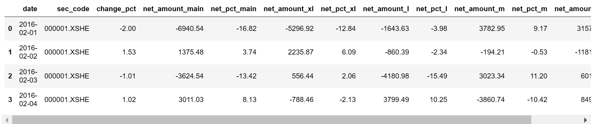
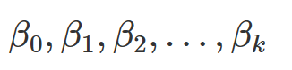

本文是《股票多因子模型实战python核心代码解释》一书的核心笔记总结与思考感悟
第一章 量化投资概述
1.1什么是量化投资
常见理解：“以数据为基础，通过构建交易模型，得到投资决策”。
相对于传统交易，量化交易不依赖于人，不易受到人情绪的影响，而是依赖于可量化的数据。
由此催生的量化交易师这个职业，要求其具备金融、数学和计算机三方面的知识。对于不同的量化方向，对这三种能力的侧重点也有所不同，例如高频量化交易者，需要更多地运用编程于数学，而对金融市场、经济运行则不需要有过多的了解。
【注意】：高频交易在A股市场并不适用，因为高频交易是通过反复交易，在价格的微小变化获利，A股目前是T+1制度，股票在购买之后要等到第二天才能卖，即不能当日内买卖，不能做高频交易。如果想做高频交易，可以通过期货和大宗商品期货交易市场，期货市场是T+0制度，流动性也很好，高频交易容量很大。另外，高频交易数据处理可以和Flink框架结合，也许是未来金融大数据的创新所在，此处不再赘述。
1.1.1股票多因子
股票多因子模型也叫做股票Alpha策略。是目前量化策略里面最成体系的一种量化投资方法。实际上，交易系统包含3个模块——阿尔法模型、风险模型和交易成本模型，其中最核心的是阿尔法模型，这三个模型构成投资组合构建模型的输入变量，我们也可以把任何关于风险的要求和认为有必要的限制加入到阿尔法模型中。
股票多因子模型背后的本质就是通过通过数量化的方法选择股票、构建优化组合，使得最后的组合可以跑赢基准指数。
相比于其他量化方向，股票多因子具有如下优点：
- 体系成熟
- 资金容量大
- 与基本面相结合
1.1.2 量化CTA
CTA全称为Commodity Trading Advisor，即“商品交易顾问”。CTA通常是指大宗商品商场上为了获取绝对收益的一类投资策略的统称，但这些投资策略并不一定就是量化策略。
由于CTA策略具有绝对收益的优势，且与其他大类资产几乎不存在相关性，因此有很多机构投资者会将CTA策略作为一种资产进行配置。
1.1.3 套利
分为统计套利和内外盘套利等。
统计套利就是基于统计规律进行套利策略的实现，其背后的逻辑很简单：如果两个资产的价差或者比价在历史上一直存在均值回复的特征，而且历史数据经得起统计方法的检验，例如两者存在协整关系，那么后续就可以在价差偏离的时候进行反向操作，从而在价差回归的时候获利。
在实践中统计套利并不被大家推崇，因为这一方法没有考虑资产价格背后的驱动内因，在黑天鹅事件来临时，容易遭受巨大的损失。
内外盘套利也是一种常见的套利方法。有很多商品在内外盘都有交易，例如黄金、大豆等。当内外盘价格在考虑汇率、关税、运费等因素之后仍然有较大差异时，就可以进行内外盘套利。当内盘价格过高的时候，做空内盘商品，做多外盘商品；反之亦然。
1.1.4 高频
高频交易的参与者通常不需要深刻理解整个金融市场的运行，也不需要了解宏观经济和产业基本面的数据，而需要更多地基于数学知识和算法技巧，利用高效的程序化方法来获利。
高频交易并不意味着交易的频率高，但是其分析的数据通常是高频的，通常要求下单的速度极快。
高频的数据必然导致在分析时数据量的指数级增加。数据量的增加就要求我们必须提高回测的效率和实盘计算的速度，所以，高频交易对交易硬件的配置有很高的要求。
1.2 股票多因子模型架构
1.2.1 因子与因子思维
“股票多因子”：股票上涨/下跌的原因的组成部分。
在股票多因子的思想里认为股票的涨跌是可以被解释的，凡是可以在逻辑上解释股票收益且可以被量化的要素都可以被称为“因子”。
一般而言，股票的因子是可以直观解释的“原因”，比如公司所在的行业、公司的盈利情况，以及一些技术指标的等。在这样的思想下，我们购买一系列股票的本质就是购买一些列驱动着这些股票上涨/下跌的因子。
多因子的多不仅仅是“多个”的意思，我们希望找到一个神奇因子使得这个因子既能给股票带来持续的正收益也能使收益的稳定性一直存在，而实际上，我们找不到这样一个神奇因子，那么就用一些列因子来搭配。于是多因子模型应运而生。多因子在经过特定的方法组合之后，可以使投资者获得稳定、正向的收益。
1.2.2 多因子模型的数学语言
股票多因子模型也常被叫做股票Alpha策略。
一只股票的涨跌可以分为两个部分：股票自身的特性与当时大盘整体的表现。
例如，某一天上证指数上涨1.5%，而上证指数中的股票A上涨1.7%，股票B上涨1.2%，这个时候我们就可以认为，两只股票自身特性所带来的收银分别是0.2%（1.7%-1.5%）、-1.3%（1.2%-1.5%），而两只股票共有的大盘表现就是1.5%。
所以，我们将由股票自身特性所带来的收益称为Alpha收益，而归属于大盘整体表现的收益，称之为Beta收益。
当然，Alpha收益和Beta收益都是可正/可负的。所谓的Alpha收益就是跑赢了大盘多少个点。
$$
R_it=Alpha_it+Beta_t
$$
R为总收益率，i是某只股票，t指时刻。对于多只股票组合也是如此：
wit是某一时刻股票组合中股票i的权重。
对于Beta收益，也就是大盘的涨跌，投资者可以通过卖空股指期货的方式进行对冲。即我们可以不考虑大盘的涨跌，只要组合具有正的Alpha收益，那么即使整体是负的，也可以获得不错的收益。
例如我们持有某一个股票组合，股票全部来自中证500指数。在某一年的牛市中，我们的组合上涨了55%，中证500指数上涨了53%。那么我们在持有组合的同时，在股指期货上做空中证500股指期货，先不考虑升水、贴水等其他交易成本的影响，估值期货给我们带来53%的亏损，则最终的收益是55%-53%=2%。这样我们就剥离出来了Alpha收益。尽管2%有些少，但是如果换成熊市，市场下跌53%，这个时候只要Alpha收益为正，最后收益就是正的。
对冲基金的常规做法就是使用多因子模型构建股票组合，然后利用股指期货做空，获取Alpha收益，这种股票多因子模型也叫Alpha策略或市场中性策略。
当然，股票多因子模型也可以不适用股指期货做空，而仅利用多因子模型进行股票的选择和权重的配置，从而对指数收益进行增强。
多因子模型的数学公式：
.jpg)
1.2.3 多因子模型的实践框架
.jpg)
多因子模型的具体构建分为3个子部分：单因子测试与筛选、因子合成和组合构建。在进入实盘之后，还应该加入归因分析的部分。
第一部分是单因子测试与筛选
先构建自己的因子池，并通过测试模板和特定的指标不断地测试这些因子，把目前市场下可行、有效的因子纳入入选因子池，这个过程叫做“因子筛选”，这一过程以因子池和因子测试为基础。
.jpg)
第二部分是因子合成
因子合成就是对上一步筛选出来的因子进行加权求和变成一个合成因子。但其加权的过程有很多种方法，有传统的指标加权法，也有比较复杂的机器学习和深度学习的加权方法，还可以完全不依赖于数量模型，单纯依靠投资者对当前市场的理解和经验进行加权，甚至可以将多种模型相结合。
.jpg)
目前在整个股票多因子体系中，这一部分可以研究、挖掘的点是最多的，而且也是主观投资者与量化投资者可以相互结合的环节。
第三部分是组合构建
当我们通过一定的手段获得合成因子后，其实就获得了每一只股票的一个总的因子分值。我们可以按照从小到大的顺序给股票池中的股票排序，接下来根据合成因子的打分来计算哪只股票买多少比例，这就是股票组合的构建。
.jpg)
股票组合的构建方法：最简单的方法是选出得分前20%的股票，然后等权买入；也可以采用复杂的数学方法，例如将优化算法结合马科维兹的组合理论进行组合优化，最终得到一个优化器计算出来的组合结果。
所谓的组合，简单来说其实就是每只股票的占比权重（买入比例）
.jpg)
假设现在是T时刻，而我们的调仓周期是t，那么依赖于现在可以获得的数据计算出T时刻（现在）的合成因子值，并通过组合构建的方法计算出一个组合（买入比例），记为PT
.jpg)
调仓周期可以是数分钟也可以是数个交易日甚至是数个月。在一个调仓周期(t)后，我们可以依赖新的数据计算出T+t时刻的股票组合（买入比例），即PT+t
.jpg)
T+t时刻的新的组合可以与前一个组合进行轧差，在对比差异后，进行调仓，确认需要买入和卖出的股票数量，如果调仓方向为负数，那么就是卖出特定比例的股票；如果为正数，就是买入特定比例的股票，最终使得组合PT变成PT+t
.jpg)
1.3 量化的基本问题
1.3.1 幸存者偏差
使用当下可交易的全体股票作为股票池进行回测分析，这就是一个典型的幸存者偏差问题。回测过程中的每一个时间点都应该使用当时存在的股票作为股票池，而不是使用现在幸存下来的股票作为股票池。
当我们的量化分析过程中存在幸存者偏差的时候，收益率会被高估。
1.3.2 未来信息
所谓的未来信息就是在分析的时候，在某个时间节点上使用了这个时间节点还没有生成或者尚且不能获得的数据。
1.3.3 过度拟合与欠拟合
过度拟合的模型表面上完全拟合了样本内的数据集，在有限的样本量下模型准确率显得极高，但实际上模型的外推能力极差。过度拟合其实是将样本数据中含有“噪声”也用于模型构建上了，也就是对样本中的信息过度解读了。
使用一些技巧来避免过度拟合：
模型的建立必须基于逻辑，即模型的建立的背后逻辑必须与金融经济含义相匹配，而不仅是单纯的数据挖掘。在金融数据建模中，即使模型表现得很完美，如果没有经济逻辑的支持，，那么他也不是一个合格的模型。
可以使用常规的方法来检测模型是否过度拟合，如利用参数的敏感性测试来衡量模型是否过度拟合。如果我们在对参数进行小幅度调整后，发现整个模型的预测和拟合能力都出现了比较大的变化，那么模型往往是过度拟合的，我们应该考虑将模型简化。
1.3.4 因果性与相关性
如果两个事件之间是相关关系，则不一定是因果关系；如果两个事件具有因果性，则一定具有相关性。在量化投资中，进行相关性分析必不可少。
1.3.5 其他问题
量化投资需要的数据包括行情数据、财务数据、公司数据等，对于数据，要从两个角度考察，一个是准确性，另一个是及时性。
第二章 量化python基础 略
第三章 量化的概率统计基础
1 | import pandas as pd |
1 | zgpa_return = pd.read_hdf('zgpa_data.h5')['daily_return'] # .h5是保存模型（科学数据）的一种文件格式 |
.png)
3.1 分布的四个“矩”
3.1.1 期望
1 | zgpa_return.mean() # 在pandas中 |
1 | 0.0009917178156725495 |
3.1.2 方差
1 | zgpa_return.std() # 在pandas中 |
1 | 0.02012226825613116 |
3.1.3 偏度
.jpg)
1 | zgpa_return.skew() |
1 | 0.22703851609785625 |
3.1.4 峰度
所谓的黑天鹅事件在统计学上叫做肥尾事件，考察分布的肥尾情况就是考察——峰度。峰度越大，说明尖峰越高，两个尾部有较多的分布点，这就是“尖峰肥尾”分布。
1 | zgpa_return.kurtosis() |
1 | 3.954898995137017 |
3.2 正态分布
3.2.1 正态分布的定义
1 | normal_dis = np.random.normal(loc=0.0, scale=1.0, size=100000) # 生成100000个均值为0，标准差为1的正态分布随机数 |
.png)
1 | pd.DataFrame(normal_dis).mean() |
1 | 0 -0.001984 |
1 | pd.DataFrame(normal_dis).std() |
1 | 0 1.00236 |
1 | pd.DataFrame(normal_dis).skew() |
1 | 0 -0.008216 |
1 | pd.DataFrame(normal_dis).kurtosis() |
1 | 0 -0.006138 |
实际上，尖峰与肥尾是和正态分布作比较的
如果某一个分布与具有相同期望和标准差的正态分布相比，两端的尾部显得相对肥厚，那么我们就称其为肥尾分布，其尖峰数据一定更集中。
3.3 线性回归
3.3.1 单元线性回归
个股的涨跌往往和大盘的走势有很大的相关性。当大盘涨的较好的时候，大部分股票会呈现出上涨的态势。个股与大盘的这种涨跌比例关系，称为个股的Beta，就是我们常说的“股性”。股性好的股票，在大盘上涨的时候会体现出很强的上涨特征；同时在大盘下跌的时候，往往下跌幅度也很大。
为了量化某一只股票的Beta，我们最常用使用的方法就是单元回归。
明确解释变量与被解释变量：
解释变量：大盘的涨跌幅——规定使用中证1000指数为大盘指数（实际操作看情况）（X值）
被解释变量：某只股票的涨跌幅（Y值）
1 | zz1000 = pd.read_csv('zz1000_daily_return_2019.csv') |
.png)
接下来，我们将股票行情在该区间的数据与大盘行情数据进行合并，在合并之前我们要先进行时间格式的处理
1 | trading_data_2019.data_date = pd.to_datetime(trading_data_2019.data_date) # 时间格式处理 |
1 | beta_df = pd.merge(trading_data_2019, zz1000, on='data_date', how='left') |
我们可以看到表格出现两个daily_return，前者x是股票当天收益率，后者是当天大盘收益率
1 | beta_df.rename(columns={'daily_return_x': 'stock_daily_return', 'daily_return_y':'market_daily_return'}, inplace=True) |
可以通过机器学习中的线性回归进行拟合，具体不表（可以阅读python大数据分析与机器学习商业实战——线性回归部分）
通过最小二乘法（带常数项）得到回归方程：
1 | stock_daily_return = 0.0013+0.5406*market_daily_return |
但是通过假设检验P>|t|可知，常数项的假设检验无法通过，所以在建立回归方程时候不应该加入常数项：
1 | stock_daily_return = 0.5463*market_daily_return |
但发现，通过该回归方程计算出的的数据还是与真正收益率有很大差异，我们把这一部分叫做残差
$$
个股收益率 = 股票Beta * 大盘收益率 + 残差项
$$
残差项的金融学解释就是中国平安这只股票的收益率不能被大盘收益率解释的那一部分，简单来说就是中国平安自己的特性带来的收益率。
下面获取所有股票的Beta（计算机解释来说就是线性回归方程的一次项系数）：
- 编写一个函数用于计算单只股票相对于大盘收益率的回归系数：
1 | import statsmodels.api as sm |
- 通过groupby-apply的组合，计算出每一只股票的Beta
1 | stock_beta_df = beta_df.groupby('secucode').apply(beta_cal) |
1 | secucode |
3.3.2 多元线性回归
多元线性回归中的解释变量的数量为两个或两个以上。
举例：
上证50由50个市值最大的股票组合而成，在2019年年中，上证50前十大权重股分别是：中国平安、贵州茅台……民生银行、农业银行。
在逻辑上，上证50的涨跌可以被这前10大权重股解释很大一部分。所以我们将上述10个权重股的日度涨跌幅作为解释变量（X值），将上证50的涨跌幅作为被解释变量（Y值），进行多元回归。
1 | sz50 = pd.read_csv('sz50_daily_return_2019.csv') |
| secucode | data_date | 600016.SH | 600030.SH | 600036.SH | 600276.SH | 600519.SH | 600887.SH | 601166.SH | 601288.SH | 601318.SH | 601328.SH |
|---|---|---|---|---|---|---|---|---|---|---|---|
| 0 | 2019-01-02 | -0.013962 | 0.000000 | -0.025000 | 0.004171 | 0.015203 | -0.017483 | -0.013387 | -0.022222 | -0.016399 | -0.020725 |
| 1 | 2019-01-03 | 0.003540 | 0.000000 | 0.012617 | -0.035869 | -0.014992 | -0.008007 | 0.007463 | 0.005682 | 0.009061 | 0.019400 |
| 2 | 2019-01-04 | 0.019400 | 0.000000 | 0.025322 | 0.064226 | 0.020339 | 0.009865 | 0.023569 | 0.014124 | 0.016343 | 0.013841 |
| 3 | 2019-01-07 | -0.003460 | 0.000000 | 0.000392 | -0.014351 | 0.005797 | 0.011101 | -0.001974 | -0.005571 | -0.005125 | -0.005119 |
| 4 | 2019-01-08 | -0.001736 | 0.000000 | -0.011755 | 0.007654 | -0.001156 | -0.007466 | 0.003955 | -0.011204 | -0.008881 | 0.003431 |
| 5 | 2019-01-09 | 0.001739 | 0.000000 | 0.019033 | 0.028714 | 0.018734 | 0.008850 | 0.008536 | 0.005666 | 0.020609 | 0.005128 |
| 6 | 2019-01-10 | -0.003472 | 0.049344 | 0.005837 | 0.013326 | 0.004301 | 0.013158 | -0.001953 | -0.011268 | 0.009658 | -0.005102 |
| 7 | 2019-01-11 | 0.005226 | 0.010119 | 0.023598 | -0.005687 | 0.027652 | 0.017749 | 0.004566 | 0.005698 | 0.009913 | 0.011966 |
| 8 | 2019-01-14 | -0.006932 | 0.001768 | -0.005669 | -0.028954 | -0.017739 | -0.013611 | -0.011039 | -0.008499 | -0.016360 | -0.005068 |
…………………………
最后通过merge方法将上面的透视表与上证50行情合并在一起，作为回归的数据集
1 | sz50_regression_df = pd.merge(trading_data_2019_w.pivot(index='data_date', columns='secucode', values='daily_return').reset_index().fillna(0), sz50, on='data_date', how='left', suffixes=['_stock', '_market']) |
| data_date | 600016.SH | 600030.SH | 600036.SH | 600276.SH | 600519.SH | 600887.SH | 601166.SH | 601288.SH | 601318.SH | 601328.SH | daily_return | |
|---|---|---|---|---|---|---|---|---|---|---|---|---|
| 0 | 2019-01-02 | -0.013962 | 0.000000 | -0.025000 | 0.004171 | 0.015203 | -0.017483 | -0.013387 | -0.022222 | -0.016399 | -0.020725 | -0.013217 |
| 1 | 2019-01-03 | 0.003540 | 0.000000 | 0.012617 | -0.035869 | -0.014992 | -0.008007 | 0.007463 | 0.005682 | 0.009061 | 0.019400 | 0.002851 |
| 2 | 2019-01-04 | 0.019400 | 0.000000 | 0.025322 | 0.064226 | 0.020339 | 0.009865 | 0.023569 | 0.014124 | 0.016343 | 0.013841 | 0.020008 |
| 3 | 2019-01-07 | -0.003460 | 0.000000 | 0.000392 | -0.014351 | 0.005797 | 0.011101 | -0.001974 | -0.005571 | -0.005125 | -0.005119 | -0.000141 |
| 4 | 2019-01-08 | -0.001736 | 0.000000 | -0.011755 | 0.007654 | -0.001156 | -0.007466 | 0.003955 | -0.011204 | -0.008881 | 0.003431 | -0.003953 |
| 5 | 2019-01-09 | 0.001739 | 0.000000 | 0.019033 | 0.028714 | 0.018734 | 0.008850 | 0.008536 | 0.005666 | 0.020609 | 0.005128 | 0.011951 |
| 6 | 2019-01-10 | -0.003472 | 0.049344 | 0.005837 | 0.013326 | 0.004301 | 0.013158 | -0.001953 | -0.011268 | 0.009658 | -0.005102 | -0.000372 |
| 7 | 2019-01-11 | 0.005226 | 0.010119 | 0.023598 | -0.005687 | 0.027652 | 0.017749 | 0.004566 | 0.005698 | 0.009913 | 0.011966 | 0.009712 |
| 8 | 2019-01-14 | -0.006932 | 0.001768 | -0.005669 | -0.028954 | -0.017739 | -0.013611 | -0.011039 | -0.008499 | -0.016360 | -0.005068 | -0.009923 |
| 9 | 2019-01-15 | 0.010471 | 0.035294 | 0.018624 | 0.038837 | 0.056644 | 0.039241 | 0.013132 | 0.008571 | 0.025735 | 0.010187 | 0.020262 |
| 10 | 2019-01-16 | 0.000000 | 0.002273 | 0.001866 | 0.018249 | 0.001697 | -0.004149 | 0.002592 | -0.002833 | 0.002560 | 0.001681 | 0.001198 |
…………………………
对合并后的回归数据进行回归
1 | result = sm.OLS(sz50_regression_df['daily_return'], sz50_regression_df[weight_stock_code_list], hasconst=True).fit() |
可以看到R^2为98.1%，解释度很高，但要考虑这10只股票相互之间的相关性如何，如果某两只或者某几只股票存在很强的相关性，不利于训练，需要将其在训练集中剔除。
查看相关性矩阵：
1 | sz50_regression_df.corr() |
可以看到相关性系数普遍高于0.65，变量存在“多重共线性”——多个解释变量（X值）之间的相关性较高，造成回归模型可信度下降。通常VIF（方差膨胀系数）大于5，就可以认为自变量存在较大的多重共线性。
计算VIF的模块：
1 | from statsmodels.stats.outliers_influence import variance_inflation_factor |
| VIF Factor | features | |
|---|---|---|
| 0 | 4.479134 | 601318.SH |
| 1 | 2.231453 | 600519.SH |
| 2 | 3.665636 | 600036.SH |
| 3 | 3.847585 | 601166.SH |
| 4 | 1.579713 | 600276.SH |
| 5 | 1.599609 | 600887.SH |
| 6 | 2.032290 | 600030.SH |
| 7 | 5.153225 | 601328.SH |
| 8 | 6.801749 | 600016.SH |
| 9 | 3.744748 | 601288.SH |
3.4 业绩评价指标
3.4.1 年化收益率
概念自行百度，年化收益率只考虑了收益率这一个特点，而不考虑波动的因素
3.4.2 夏普比率
3.4.3 信息比率
IR是一个衡量组合超额收益的指标，其含义是单位主动风险所带来的超额收益。
它考虑了投资者的基准、投资者获取超额收益的能力以及获取这一收益的稳定性。
第四章 单因子测试
一个好的因子不仅在历史数据上与股票收益率之间体现出稳定且持续的相关关系，而且因子的逻辑和因子与股票收益率的关系都可以被经济逻辑解释。如果单纯是用统计方法寻找出来的因子，则很可能会陷入数据挖掘的陷阱，导致模型的外推能力很差。
4.1 因子的来源
因子的来源这一问题是在回答“什么样的因素会导致股票上涨或下跌？”或者“涨得好（坏）的股票都有什么样的特点？”这两个问题。

4.1.1 财务因子
财务因子最重要的数据来源就是3张财务报表：资产负债表、利润表和现金流量表。绝大部分财务因子是利用财务报表中的科目做一些合理的运算、修正、合成而形成的。可以将通过处理财务报表获得的财务因子再分成如下5类：
1. 估值因子
最常见的估值因子有PE、D/P、PB、PS、PEG等。估值因子背后的逻辑：我们认为市场是非理性的，在很多时候对一些信息会过度解读，导致市场情绪过度反应，从而阶段性地形成对某些个股的高估与低估。而估值存在均值回复的特性，所以定期卖出被高估的股票、买入被低估的股票就可以获得收益。基于这样的逻辑，通常在多因子模型中会有一些列的估值因子。
2.盈利因子
上市公司的核心竞争力就是盈利能力。通常我们会使用ROE、销售净利率这些因子来衡量上市公司的盈利能力，进而构造出盈利类因子。其背后的逻辑也显而易见；盈利能力强的公司，其股票往往具有较大的上涨空间。
此外，盈利因子还包括由盈利派生出来的因子，例如盈利稳定性因子。其背后的逻辑是：盈利稳定的公司应当具备稳定性溢价，继而可以获得超越市场的收益。
3. 营运因子
通常我们衡量一家上市公司的营运能力会使用存货周转率、总资产周转率等指标。同样地，这些指标在计算后可以被直接作为因子，也可以计算这些指标的同比或者环比将其作为因子，例如存货率的变化率等。
4. 成长因子
成长因子刻画的是上市公司业绩增长的速度，常用的指标有EPS的同比增长、ROE的同比增长、营业额的同比增长、利润总额的同比增长等。成长因子的逻辑：处于告诉增长期的公司具有更好的前景，因此其股票具有更大的上涨空间。
5. 现金流因子
现金流对一家公司来说非常重要，缺少现金流的公司往往是朝不保夕的。从财务的角度来讲，利润表是按照权责发生制来编制的，而现金流表则是根据收付实现制来编制的。通常刻画公司现金流情况的因子有现金流稳定性因子、经营现金流质量因子等。
4.1.2 分析师一致预期因子
券商和投行都会有自己的研究所，研究所的卖方分析师的一个重要产出成果就是卖方研究报告。分析师们会通过对上市公司调研、分析公开数据和与行业内的专家交流等方式了解上市公司的概况，然后融入自己的逻辑推理，最终写出相应的报告。报告中通常会对上市公司的盈利进行预测，给出股票买入或者卖出等评级。
某分析师写了一篇关于“安徽建工”的研究报告，并将该上市公司评级为“买入”。同时，在研究报告下面给出了这家公司数年的盈利预测，如下图：
其实分析师群体对一只股票的涨跌是有一定的话语权的。这个话语权来源于两个方面：
- 分析师付出了自己的劳动，对公司进行了调研、数据研究等，其预测结果具有一定的增量信息，可以用于辨识公司未来的运营发展情况。
- 市场上有投资者会关注分析师的报告，并且参考分析师的意见进行股票的投资，继而影响股价。
从逻辑上来讲，这一类因子都可能对股票的涨跌具有较好的预测能力。
因此，我们可以把市场上所有的卖方分析师发布的预测数据整合起来，并做相应的处理，从而构建一些列分析师一致预期因子。包括以下三类，在实际过程中，我们可以进行多种形式的处理，在符合经济逻辑的前提下获得多样化的因子。
1. EPS一致预期变动
利用分析师一致预期数据的最简单的方法就是比较分析师预测出来的EPS数据与已经实现的EPS（每股收益）数据。如果分析师EPS远高于当前EPS，那么说明市场对这一公司的盈利预期很高，往往有较多投资者看好。反之，则说明公司处于下行通道，股价往往受挫。
2. 评级变化率
再国内，卖方分析师的研究报告往往会对股票做出买入、增持、中性、减持或卖出这样的评级，示例研报的投资评级为买入，我么可以看到评级说明中买入的具体含义是什么。
对于同一只股票，我么可以收集一下其过去一段时间发布的研报中，每个评级的数量占比。如果负面评级的占比在上升，那么后续该股票可能面临较大的下跌风险。我么可以根据负面评级的占比变化或者正面评级的占比变化构建“评级变化率因子”。
3. 分析师热度变化率
市场上的卖方分析师的数量在短时间内不会有特别大的变化，所以在短时间内研报的产出数量基本是固定的。如果某只股票的研究报告突然增多了起来，就说明卖方分析师们越来越关注这只股票了。
基于这样的逻辑，我们可以针对每一只股票计算其某一段时间发布的研究报告数量总和的环比变化率，并据此来构建“分析师热度变化率因子”
4.1.3 技术因子
技术分析一直处于鄙视链的下游，很不受人待见。技术类因子在经济直觉上不如财务因子和分析师一致预期因子等逻辑清晰，但是在二级市场（对已经发行的证券进行买卖，转让和流通的市场）上，很多股票上涨/下跌的理由可能就是简单的资金驱动，比如跌破20日均线造成恐慌导致的下跌等。
技术因子大部分来自股票自身的价量信息。例如日度频率的因子，在其构造的过程中通常只会用到开盘价、收盘价、最低价、最高价以及成交量、换手率等常见的信息。此外，技术因子更新周期快。财务因子往往以季度为更新频率，而技术因子则可以根据我们需要的频率进行调节，比较灵活。
最常用的技术因子是动量因子，即过去特定时期累计收益率，例如可以将每一只股票过去一年的收益率作为股票的动量因子。这样的因子之所以有效，是因为资金存在趋势追踪的特点，市场也往往有强者恒强的特性。
4.1.4 其他因子
有许多因子使用的是另类数据
1. 另类数据因子
例如在雪球、东方财富股吧、集思录等投资者公开交流的网站中，用户产生的内容可以代表当前市场参与者的情绪；淘宝等电商平台的销售数据往往可以作为部分上市公司产品销量的前瞻指标；招聘网站的招聘数量可能隐藏着公司业务扩张的信息等。
这些数据往往是非结构化的，需要通过一定的方法进行清洗、处理之后才可以构成因子。
2. ESG因子
环境、责任和公司治理。
ESG因子目前在海外比较流行，而在国内则较少被提及。ESG因子背后的逻辑是公司的价值有一部分会通过对环境的保护、对社会的外部性和公司内部治理的合理性所体现出来。如果公司能够有长远的目标，在ESG方面进行努力，那么该公司往往容易获得市场的认可，从而其股价也能具有较好的表现。
4.2 大小盘因子（市值因子）
4.2.1 大小盘因子的定义
市值（mv）的大小对股票的涨跌是由较大的影响的，这也是为什么会有“盘子太大，涨不起来”这一说法的原因。从历史数据来看，中证500代表的中小市值股票是跑赢上证50代表的大市值股票的，也就是投资者更加偏好小市值股票。从经济逻辑上来讲，对于小市值公司能够获得超额收益这个现象由以下三个原因：
- 小市值的公司往往是新兴产业，未来经营具有很大的不确定性，所以投资者投资小市值公司需要获得相应的风险溢价
- 我国股市投资者炒作情绪浓重，在一个不能做空的市场，往往炒作情绪越浓重的板块越容易产生超额收益，小盘往往是炒作的对象
- 小市值公司往往都是轻资产公司，成长性较好，由更好的前景
4.2.2 大小盘因子的计算
计算市值因子，通常会用到公司的总市值
上市公司的市值大小=上市公司发行总股本xA股市场股票价格
我们抽取任意一个交易日，把根据上述公式获得的上市公司市值大小绘制为直方图
1 | trading_data_2019[trading_data_2019['data_date'] == '2019-05-27']['mv'].hist(bins=100, figsize=(18, 9)) |

我们可以发现这个分布严重右偏，这是因为我国中小市值的公司特别多，市值分布极度不均匀。大市值公司数量少。
此外还有一个问题：小公司和大公司市值相差很大，但是反映在股票市场上，市值因子造成的股票涨跌差距却不会这么大。例如，某一天市场偏好大盘股，那么两只相同行业的股票，其中市值大的股票可能上涨3%，而小盘股可能上涨1.5%，但是这两个公司市值差异可能是100倍甚至1000倍。
所以需要对因子进行处理来改变这种因子数据分布的不均衡和不合理：对市值取对数
1 | np.log(trading_data_2019[trading_data_2019['data_date'] == '2019-05-27']['mv']).hist(bins=100, figsize=(18, 9)) |
.png)
在聚宽因子库中亦有：
4.2.3 大小盘因子的处理流程
4.2.4 去极值与异常值
介绍几个概念：
面板数据：在数据集中既有同一时刻下多个不同个体的数据，也有单个个体在不同时刻下的数据，时间维度和个体维度
截面数据：只有一个时刻、多个个体的数据集
1
trading_data_2019[trading_data_2019['data_date'] == '2019-05-27'] # 把2019.5.27这一天的数据单独拿出来考察
时间序列数据：只考虑一只股票
1
trading_data_2019[trading_data_2019['secucode'] == '000001.SZ'] # 单独获取代码为000001.SZ的股票的时间序列数据
我们在进行因子处理的时候，都是针对每一个截面数据的处理。无论是异常值的去除还是因子值的标准化，都在一个时间点的截面数据中，将所有股票的因子值作为一个数据对象进行处理。因子模型的本质就是在某一时刻对股票打分，并通过买入得分高的股票，卖出得分低的股票来获利。
1 | sub_trading_data = trading_data_2019[trading_data_2019['data_date'] == '2019-05-27'] # 取截面数据 |
1 | 1.2637189510611557 |
取对数后的市值分布偏度依然达到1.26.这样的偏度是最右侧几个极大市值造成的。
对于极值进行压缩处理。当因子值大于或小于某一个阈值的时候，我们就将该因子值设为这一阈值。我们以均值为中间点，向左右两边各扩展3倍标准差，作为因子值的最终范围，下面的代码可以计算因子值的上下限。
1 | size_upper = sub_trading_data['size'].mean() + 3 * sub_trading_data['size'].std() |
在获得因子值上下限后，当因子值大于等于上限值时，我们将因子值强行改为上限值；当因子值小于等于下限值时，我们将因子值强行修改为下限值：
1 | sub_trading_data['size'] = sub_trading_data['size'].where(sub_trading_data['size'] < size_upper, size_upper).where(sub_trading_data['size'] > size_lower, size_lower) |
.png)
另外，会存在数据失真的情况——异常值的出现，在计算财务因子的时候往往会出现，比如当PE小于0的时候，其实这一指标已经变得没有意义了，应该做相应的处理——一律赋值为上限值或者下限值；将PE最终处理完成后的因子赋值为0，即PE值对公司的最终因子得分情况没有任何影响。
4.2.5 标准化
在对异常值处理之后，需要对因子进行标准化——即去除因子的量纲，让每一个因子之间都可以进行比较、相互叠加，因子组合的前提是这些因子具有相同的量纲。对因子进行标准化后不再有单位的概念，而仅是一个被标准化之后的分值（Z-score）。
标准化公式如下：标准化后的因子值=（因子原始值-因子均值）/因子的标准差
1 | sub_trading_data['size'] = (sub_trading_data['size'] - sub_trading_data['size'].mean()) / sub_trading_data['size'].std() |
.png)
对比可以看到，两张图的形状没有变化，只是横坐标的数值范围和大小发生了变化。后者的因子分布围绕着0，而且正负值都有。
4.2.6 中性化
以市值因子为例，有的行业的公司市值就是大，比如银行；有些行业是典型的轻资产成长型行业如传媒，上面计算因子的过程其实如同把所有行业放在一个擂台上进行拳击比赛，显然不公平，为了解决这一问题，提出中性化的概念，对行业进行区分的进一步处理方法叫做“行业中性化”。
目前市场上使用最多的行业分类有三种：GICS（全球行业分类，标准普尔与大摩公司推出）、申万一级行业（申银万国证券研究所发布）、中信一级行业（中信证券研究所发布）。本文选取申万一级行业分类。
重要原理：中性化即将行业变成哑变量后再作为解释变量（X值），而需要中性化的因子则作为被解析变量（Y值）进行回归。回归的残差项就是被中性化后的因子值。如果用行业哑变量来解释因子值，那么不能被行业解释的那一部分就是剔除了行业因素后的因子值。而剔除了行业因素后的因子值就是回归模型的残差项，这也正是我们希望获得的行业中性化之后的结果。
行业中性化函数
1 | def industry_neutralization(factor_df, factor_name): # 定义计算回归的函数，返回回归模型的残差项 |
然后用行业中性化函数industry_neutralization实现对这一天市值因子的行业中性化：
1 | sub_trading_data['size_factor_neuted'] = industry_neutralization(sub_trading_data, 'size') |
| data_date | secucode | ind_code | size | size_factor_neuted | |
|---|---|---|---|---|---|
| 334461 | 2019-05-27 | 000001.SZ | 480000 | 3.128591 | 0.859205 |
| 334462 | 2019-05-27 | 000002.SZ | 430000 | 3.128591 | 2.911020 |
| 334463 | 2019-05-27 | 000004.SZ | 370000 | -1.171737 | -1.323925 |
| 334464 | 2019-05-27 | 000005.SZ | 410000 | -0.636252 | -0.699192 |
| 334465 | 2019-05-27 | 000006.SZ | 430000 | 0.251347 | 0.033776 |
| 334466 | 2019-05-27 | 000007.SZ | 430000 | -0.905512 | -1.123082 |
| 334467 | 2019-05-27 | 000008.SZ | 640000 | 0.554857 | 1.011895 |
| 334468 | 2019-05-27 | 000009.SZ | 510000 | 0.735112 | 1.066907 |
| 334469 | 2019-05-27 | 000010.SZ | 620000 | -0.931866 | -0.879259 |
| 334470 | 2019-05-27 | 000011.SZ | 430000 | -0.160195 | -0.377766 |
| 334471 | 2019-05-27 | 000012.SZ | 610000 | 0.361988 | 0.592587 |
| 334472 | 2019-05-27 | 000014.SZ | 430000 | -1.121544 | -1.339114 |
| 334473 | 2019-05-27 | 000016.SZ | 330000 | 0.123686 | 0.270823 |
…………………………
最后绘制被中性化前后的因子值的分布直方图：
1 | sub_trading_data[['size', 'size_factor_neuted']].hist(bins=100,figsize=(18, 9)) |
.png)
左边为被中性化前的因子分布直方图，右边是被中性化后的，单纯从形状上看，做了行业中性化之后的因子值分布更加匀称，但不存在质的变化。
[注意]：有的因子值在被中性化之后会超过之前设定的-3、+3的阈值。如果有必要，我们可以在中性化之后对部分因子再进行一次去极值处理。
我们以市值普遍较大的银行业和公司数量较多的化工业为例，来分析以下其市值因子被中性化前后的变化。（银行业的申万一级行业代码为480000，化工行业代码为220000）
1 | sub_trading_data[sub_trading_data.ind_code == '480000'][['size', 'size_factor_neuted']].hist(bins=100, figsize=(18 ,9)) |
.png)
可以看到，银行业市值因子被中性化前后没有任何形状的变化，但是对应的横坐标轴的数值发生了改变。
接下来计算被中性化前后，银行市值因子的均值，在中性化之前，均值达到2.2左右，证实了银行业的上市公司市值普遍较大的情况，被中性化后均值几乎为0
1 | sub_trading_data[sub_trading_data.ind_code == '480000'][['size', 'size_factor_neuted']].mean() |
1 | size 2.269385e+00 |
接下来是化工：
1 | sub_trading_data[sub_trading_data.ind_code=='220000'][['size', 'size_factor_neuted']].hist(bins=100, figsize=(18 ,9)) |
.png)
1 | sub_trading_data[sub_trading_data.ind_code=='220000'][['size', 'size_factor_neuted']].mean() |
1 | size -2.150850e-01 |
这个例子让我们理解了中性化的作用和重要性。
还有一个问题，行情数据中的日期是交易当天的，例如2019年5月27日的因子需要在收盘后才能通过计算获得，实际使用需要等到2019年5月28日。为了避免使用未来信息，就需要将因子数据的时间进行调整——将日期往后调整一天表征为因子使用时间的日期“factor_date”
5.27改为5.28
1 | size_factor_df = sub_trading_data[['data_date', 'secucode','size', 'size_factor_neuted']] |
| factor_date | secucode | size | size_factor_neuted | |
|---|---|---|---|---|
| 334461 | 2019-05-28 | 000001.SZ | 3.128591 | 0.859205 |
| 334462 | 2019-05-28 | 000002.SZ | 3.128591 | 2.911020 |
| 334463 | 2019-05-28 | 000004.SZ | -1.171737 | -1.323925 |
| 334464 | 2019-05-28 | 000005.SZ | -0.636252 | -0.699192 |
| 334465 | 2019-05-28 | 000006.SZ | 0.251347 | 0.033776 |
| 334466 | 2019-05-28 | 000007.SZ | -0.905512 | -1.123082 |
| 334467 | 2019-05-28 | 000008.SZ | 0.554857 | 1.011895 |
| 334468 | 2019-05-28 | 000009.SZ | 0.735112 | 1.066907 |
| 334469 | 2019-05-28 | 000010.SZ | -0.931866 | -0.879259 |
| 334470 | 2019-05-28 | 000011.SZ | -0.160195 | -0.377766 |
…………………………
到这一步，2019年5月27日（市值因子日期为2019年5月28日）这一天的市值因子就计算完成了，可以将其存入数据库或csv文件，方便后期调用。
4.3 ROE因子
净资产收益率（ROE），又称为股东权益报酬率，不仅是一个很好的指标，而且是一个长期有效的指标，甚至可以说意味着价值投资的本质。ROE高说明公司在创造价值，是实打实地向社会输出自己的产品，同时换回相应的回报。
本节以ROE因子为例，介绍财务因子的计算方法。
4.3.1 ROE因子简介
本节用近12个月的净利润（TTM）与平均股东权益相除的方式来计算ROE。其中平均股东权益为最新一期财报的股东权益和去年同期财报股东权益的均值。
ROE = 最近12个月（TTM）净利润/（0.5 x 最新一期财报股东权益 + 0.5 x 上年同期股东权益）
由此计算的ROE叫做TTM（最近12个月）的ROE。
TTM：将过去12个月或四个季度的数据累加求和作为某一财务指标，就可以称其为“某指标的TTM”。
4.3.2 ROE因子的计算
其相对于市值因子而言需要考虑的是对异常值的处理
1 | roe_factor = pd.read_hdf('./factor/roe.h5') |
| data_date | secucode | roe | |
|---|---|---|---|
| 0 | 2013-01-22 | 000001.SZ | 4.30 |
| 1 | 2013-01-22 | 000002.SZ | 2.43 |
| 2 | 2013-01-22 | 000004.SZ | 0.49 |
| 3 | 2013-01-22 | 000005.SZ | 2.49 |
| 4 | 2013-01-22 | 000006.SZ | 2.46 |
1 | roe_factor[roe_factor['data_date'] == '2019-05-27']['roe'].hist(bins=100,figsize=(18, 9)) # 选取2019.5.27日的因子值，绘制ROE数据分布直方图 |

从这天的ROE分布来看，ROE原始数据有很大的问题：存在极大的ROE数值且有负的ROE指。
对于ROE数值为负的公司需要谨慎对待，有的公司可能是科技成长型公司，前期就处于亏损的状态，在这种情形下可以设置其因子值为0；而有的公司是由于业绩不好、经营不善导致的亏损，这个时候，就应该将这些公司的因子值变为压缩后的最小阈值。
这一部分需要投资者进行主观判断，笔者这里仅采用一种较为合理的方法作为案例供读者参考。
首先我们进行简单的极值化和标准化处理：
1 | roe_factor = roe_factor[roe_factor['data_date'] == '2019-05-27'] # 选择2019年5月27日这一天的数据 |
我们使用和市值因子一样的办法获得了一个截面数据，并制定了以3倍标准差为范围的因子的上下阈值。被常规压缩后的ROE因子值的分布如下：
.png)
可以看到对于ROE因子这一阈值选取的并不合理，当我们选取3倍标准差的时候，即使对因子值进行了压缩，最终的分布也不尽如人意。
实际上，ROE因子是一个财务因子，本身有很强的经济意义，可以直接设置其阈值，我们可以将ROE上边界设定为30%，下边界设定为0.当然这里阈值的设定需要投资者融入自己的观点，可以随市场不同而变化，按照这一方法进行压缩后，因子值的分布直方图如下：
1 | roe_factor['roe'] = roe_factor['roe'].where(roe_factor['roe'] < 30, 30).where(roe_factor['roe'] > 0, 0) |
.png)
因子标准化：
1 | roe_factor['roe'] = (roe_factor['roe'] - roe_factor['roe'].mean()) / roe_factor['roe'].std() |
.png)
该分布虽然不像市值因子那样具有较好的对称性，但是这一数据处理的结果隐含着投资者的投资观点，例如，ROE最高限度30%的选取与我国资本市场近十几年来具有长期稳定高ROE公司的ROE平均水平相一致。ROE超过30%的公司，通常是周期行业在周期顶部形成的不可持续的ROE，很难保证公司一直处于高ROE状态。
4.3.3 市值中性化
在大小盘因子中我们引入了行业中性化，现在我们在行业中性化之外引入市值中性化的概念。（实际上最常用的两种中性化就是行业中性化和市值中性化）
行业中性化解决了不同行业间因子值天然存在差异的问题。同样地，引入市值因子的中性化是为了避免市值因子对因子本身的影响。
行业特性会影响因子，而市值或者说公司的规模也会影响因子。例如在同一个行业中，大市值的公司和小市值的公司往往体现出不同的特征。公司规模大往往借贷成本低，同时相对于行业中的其他公司来说处于较为成熟的时期，估值相对会较低。
当我们对因子进行“行业+市值”的中性化后，就可以剔除“公司所处行业”和“公司规模”这两个因素对因子本身的影响。
1 | roe_factor |
| data_date | secucode | roe | |
|---|---|---|---|
| 341148 | 2019-05-27 | 000001.SZ | 0.359087 |
| 341149 | 2019-05-27 | 000002.SZ | -0.506468 |
| 341150 | 2019-05-27 | 000004.SZ | 1.014810 |
| 341151 | 2019-05-27 | 000005.SZ | -0.776251 |
| 341152 | 2019-05-27 | 000006.SZ | -0.113034 |
| 341153 | 2019-05-27 | 000007.SZ | 0.928629 |
| 341154 | 2019-05-27 | 000008.SZ | -0.716299 |
…………………………
1 | size_factor_df[['secucode', 'size']] |
| secucode | size | |
|---|---|---|
| 334461 | 000001.SZ | 3.128591 |
| 334462 | 000002.SZ | 3.128591 |
| 334463 | 000004.SZ | -1.171737 |
| 334464 | 000005.SZ | -0.636252 |
| 334465 | 000006.SZ | 0.251347 |
| 334466 | 000007.SZ | -0.905512 |
| 334467 | 000008.SZ | 0.554857 |
…………………………
市值中性化函数
1 | def industry_and_size_neutralization(factor_df, factor_name): |
1 | # 利用之前市值因子行业中性化中使用的行情和行业数据来进行数据整合 |
| data_date | secucode | roe_neuted | |
|---|---|---|---|
| 0 | 2019-05-27 | 000001.SZ | -0.275693 |
| 1 | 2019-05-27 | 000002.SZ | -1.230760 |
| 2 | 2019-05-27 | 000004.SZ | 1.055475 |
| 3 | 2019-05-27 | 000005.SZ | -0.665597 |
| 4 | 2019-05-27 | 000006.SZ | -0.144276 |
| 5 | 2019-05-27 | 000007.SZ | 1.176042 |
| 6 | 2019-05-27 | 000008.SZ | -0.831623 |
| 7 | 2019-05-27 | 000009.SZ | -0.437243 |
| 8 | 2019-05-27 | 000010.SZ | -0.311500 |
| 9 | 2019-05-27 | 000011.SZ | 0.160937 |
4.4 RSI因子
RSI（相对强弱指标）为一种技术因子，以此为例讨论技术类因子的计算与处理，RSI反映的是一定时期内某只股票的市场情绪
4.4.1 RSI指标计算
计算过程自行百度；
在一般的技术分析中，我们通常会查看RSI的数值来判断当下的市场强弱情况，RSI>80 为超买，应该卖出，RSI<20 为超卖，应当买入。
4.4.2 RSI因子的定义与计算（内含聚宽因子画图实例）
可以直接使用聚宽中的数据，此处作者是自己编函数求了一遍，较为复杂，实操中可以直接用现成的数据
因子的标准化、极值处理、中性化等一些列操作是通用的，实际上这些因子处理方法包括后面的因子IC处理都是可以交给聚宽完成了，方便快捷，不需要重复造轮子
1 | # 聚宽的例子 |
1 | 51.388877159421064 |
但是这个RSI因子（隶属于技术因子）在聚宽因子库中是没有的，只能在技术指标中找到RSI函数，但这个函数只能求某一天（具体到时分秒）的一只股票或者某几只股票的RSI值。
下面我们在聚宽因子库中挑选EMA5因子（5日指数移动均线这个指标）来进行展示：
以下操作非常重要，这是所有因子进行画折线图的通用操作
1 | # 导入函数库 |
| code | 000001.XSHE | 000002.XSHE | 601211.XSHG |
|---|---|---|---|
| 2022-01-04 | 1.007070 | 0.969148 | 0.995848 |
| 2022-01-05 | 0.985531 | 0.958679 | 1.003991 |
| 2022-01-06 | 0.991505 | 0.976096 | 1.014214 |
| 2022-01-07 | 0.991262 | 0.959093 | 1.001404 |
| 2022-01-10 | 0.994559 | 0.964938 | 0.991580 |
| 2022-01-11 | 0.987994 | 0.972586 | 0.994387 |
| 2022-01-12 | 1.007881 | 0.989076 | 0.995145 |
| 2022-01-13 | 1.006046 | 1.008643 | 0.999747 |
| 2022-01-14 | 1.030727 | 1.032724 | 1.021094 |
| 2022-01-17 | 1.025145 | 1.016208 | 1.012094 |
…………………………
虽然表格上面第一行看起来和下面数据有一点不对应，但无伤大雅
1 | import matplotlib.pyplot as plt |
.png)
再练习一个三只股票的营业收入增长率因子的图像绘制
1 | # 导入函数库 |
.png)
- 补充：什么是前复权、后复权、不复权？
转送：转送就是送股或者转增股票，比如10送10，10送15。
除权：上市公司在送股后，股票的数量变多，但是股票价值不变，所以股价变低，在K线图上出现一个缺口，这个缺口叫除权。除权后，股价发生了变化，但实际成本没变，如果我们要想知道股票的真实价格就需要对股票进行复权。
复权：就是对股价和成交量进行权息修复，按照股票的实际涨跌绘制股价走势图，并把成交量调整为相同的股本口径，然后用相同成本进行比较。复权可以消除由于除权除息造成的价格走势畸变，保持股价走势的连续性。所谓不复权，就是除权后，不人工填补股价走势图上的巨大空隙，任由断层存在。
以花园生物（300401）为例，根据年初的高送转方案，每10股均送转15股，5月4日实施后，股价从50元跌至20.35元。下图一是不复权的走势图，在5月4日股价呈现断崖式下跌。
【图一：花园生物5月4日除权后不复权走势图 】
前复权就是以目前股价为基准，保持现有价位不变，缩减以前价格，把除权前的K线向下平移，使图形吻合，保持股价走势的连续性。简单说就是把除权前的价格按现在的价格换算过来，复权后现在价格不变，以前的价格减少。
前复权公式：复权后价格=(复权前价格-现金红利)/(1+流通股份变动比例)
下图二是花园生物前复权走势，保持现有的20.35元不变，把5月3日的50元复权后变成19.94元。我们同时发现与不复权大幅下跌相比，前复权处理后5月4日股价实际上还上涨了2.06%。
【图二：花园生物前复权走势】
后复权是指在K线图上以除权前的价格为基准来测算除权后股票的市场成本价。简单说就是把除权后的价格按以前的价格换算过来，复权后以前的价格不变，现在的价格增加。通过后复权我们可以看出该股上市以来累计涨幅，如果当时买入，参与全部配送、分红，一直持有到目前的价位。
后复权公式：复权后价格=复权前价格×(1+流通股份变动比例)+现金红利
下图是花园生物后复权走势，5月3日的股价为100.40元，5月4日的收盘价102.46元，同样涨幅2.06%。
【图三：花园生物后复权走势】
二、不复权、前复权、后复权的用途
不复权的话，K线图能真实反应股价历史的除权信息，缺点是会留有大缺口，均线系统被打乱。
前复权以目前价为基准复权，可以很清楚的看到成本分布情况，如相对最高、最低价，成本密集区域，以及目前股价所处的位置是高还是低。如果进行技术分析，最好用前复权，这样当前的价格是最新的实际价格，且K线均线的走势是连续性的，不影响看盘。
后复权保持上市第一天的价格不变，根据分红配股数据处理之后的价格，这会导致最后一天的价格显示出来不是实际成交价，但可以看出股票真实价值的增加及持股者的真实收益率。如果进行价值投资，建议采用后复权，这样计算的收益率是相对正确的，查询也比较直观。
4.5 其他因子的计算
4.5.1 BTOP因子
平均市净率PB的倒数即为BTOP。
PB就是上市公司的市值与上市公司的账面价值的比值。PB值越低说明对应的股票估值越低，言下之意即该股票越值得买入，那么BTOP因子的分值就应该越高。在具体使用财务数据的时候，我们往往会使用最新一期的财务报告中的“不含少数股东权益的股东权益合计”这一项作为账面价值，BTOP的计算公式为：
BTOP=最新一期不含少数股东权益的股东权益合计/公司总市值
对于该因子，要注意：有一些公司的股东权益合计可能为负。从异常值处理的角度出发，此时因子值应该赋值为最小阈值。
4.5.2 ROE稳定性因子
除了ROE（净资产收益率）自身之外，ROE的波动性也是一件值得关注的事情
有些公司近些年的ROE可能一直保持在高位，把时间拉长之后，ROE会体现出忽高忽低的周期性。这一情况在周期性行业上市公司中很常见，例如钢铁、煤炭类公司。周期行业公司的ROE往往波动性较大，在好的年份ROE可以达到100%，而在差的年份几乎全行业亏损。
.jpg)
4.5.3 EPS一致预期变动率因子
4.5.4 舆论因子
舆论因子是衡量市场情绪的一个因子，一般是在网络上获取投资者对某些股票的评论，从而分析投资者的情绪。
目前，国内热度较高的投资者交流社区有雪球网、股吧等。我们也可以从新浪微博等社交媒体处获得相关股票讨论信息，然后经过文本情感分析算法，获得当下投资者对股票的情感信息，进而将其量化为因子。
4.6 单因子的测试分析
4.6.1 因子测试的基本逻辑
单因子测试的目的就是从因子池中筛选出合适的因子（也就是说我们构造好了因子，这个因子究竟怎么样，合不合适，需要做一个测试才能了解）。
最基本的思路就是把T时刻的因子值和T到T+t区间股票的收益率进行相关性分析。如果存在较高的正相关性，则说明较高的因子值可以获得较高的收益率，也就是因子具有较好的预测能力。
假设市场上有5只股票，模型的调仓周期为5日。在T日给出5只股票的因子值如下表：
| 股票 | T日因子值 |
|---|---|
| 股票1 | 3 |
| 股票2 | 2 |
| 股票3 | 0 |
| 股票4 | -1 |
| 股票5 | -2 |
在5日后，我们可以计算出这5只股票在这5日的收益率，如下表：
| 股票 | T至T+5日收益率 |
|---|---|
| 股票1 | 8.0 |
| 股票2 | 5.7 |
| 股票3 | 3.6 |
| 股票4 | -3.3 |
| 股票5 | -6.5 |
我们将T日的因子值和T至T+5时间段的收益率放在一起，并计算表两列数据的相关性：
| T日因子值 | T至T+5日收益率 |
|---|---|
| 3 | 8.0 |
| 2 | 5.7 |
| 0 | 3.6 |
| -1 | -3.3 |
| -2 | -6.5 |
关于皮尔逊相关系数的知识点参见《Python大数据分析与机器学习商业案例实战-part4》14.2.3节
1 | from scipy.stats import pearsonr |
1 | 相关系数r值为0.9545262427747666，显著性水平P值为0.011560866796767433 |
相关性系数为0.95，可见两列数据的相关性非常高，可以说因子的预测能力非常强，当然，实操中，不可能有这么强预测能力的因子。
我们用相关性衡量因子对收益率的预测能力，在因子测试中，这种相关性计算的结果，称为信息系数（IC），代表的是因子对未来股票收益率的预测作用。在实际因子测试中，我们并不使用上述皮尔逊相关性系数进行计算，而是用spearman秩相关系数，该系数比皮尔逊相关系数对异常值具有更好的抗干扰能力。
- spearman相关系数的介绍
那么对于这两个系数，怎样的值才是好的呢，遵循下面的关系
0.8-1.0：极强相关
0.6-0.8：强相关
0.4-0.6：中等强度相关
0.2-0.4：弱相关
0.0-0.2：极弱或者无相关
- 两种相关性系数的区别：
- 连续数据，正态分布，线性关系，用pearson相关系数是最恰当，当然用spearman相关系数也可以，效率没有pearson相关系数高。
- 上述任一条件不满足，就用spearman相关系数，不能用pearson相关系数。
- 两个定序测量数据（顺序变量）之间也用spearman相关系数，不能用pearson相关系数。
- Pearson相关系数的一个明显缺陷是，作为特征排序机制，他只对线性关系敏感。如果关系是非线性的，即便两个变量具有一一对应的关系，Pearson相关性也可能会接近0。
1 | import scipy.stats |
1 | 0.9545262427747666 |
由spearman计算出来的IC叫做RankIC
在因子测试中，除了计算IC，还可以直接使用单个因子的因子值构建简单的股票组合进行回测，这就是“单因子分组测试”。分组很简单，通常在时间截面上根据因子值的大小对股票进行分组。
例如，我们把2019年5月27日这一天市场上的股票先按照被测试因子值从小到大排序，然后将其按照数值大小分成一定的股票组别。我们可以规定每组的股票数量相同，也可以指定特定因子值区间为一组。分组测试就是在每一次调仓的时候将之前的分组组合调整为新的分组组合。
除了因子的预测能力之外，我们还会考察因子的稳定性。如果某一个因子的预测效果很好，但是因子值的变动很大，对股票的打分不断有较大幅度的变化，那么就会造成每次调仓的时候换手率过高。过高的换手率会带来更高的交易成本和流动性风险。因此，我们也会检验分组组合的换手率情况以及因子的自相关性。
4.6.2 Alphalens简介（实操中可以直接用聚宽的因子分析工具，这个作为理论了解）
4.6.3 因子IC分析（内含聚宽因子构造加分析实例）——转补充部份
以《深入浅出python量化交易实战-part2》为例进行一次因子构建（实际上要在聚宽环境中跑起来需要进行因子自定义因子计算等操作，可以去看“聚宽因子分析教程”）
说明：如果为了省事可以直接去聚宽因子库里选现成的因子，本例是选取了股票资金流向数据（普通股票数据）来进行构造因子的，其余数据同理。
股票资金流向数据可以看到主力的实时动向
1 | #从jgdata中导入全部函数 |

1 | b = get_money_flow('000001.XSHE', '2015-10-01', '2015-12-30', fields="change_pct") # 只有一个字段 |
| change_pct | |
|---|---|
| 0 | 0.08 |
| 1 | 0.92 |
| 2 | -3.47 |
| 3 | 0.57 |
| 4 | -1.12 |
| 5 | 0.40 |
| 6 | -0.64 |
| 7 | 2.29 |
| 8 | 1.33 |
…………………………
正式代码：
1 | #从jgdata中导入全部函数 |
| date | sec_code | change_pct | net_amount_main | net_pct_main | |
|---|---|---|---|---|---|
| 0 | 2020-03-23 | 002458.XSHE | -9.99 | -11561.8543 | -17.0788 |
| 1 | 2020-03-24 | 002458.XSHE | 0.53 | -4068.5285 | -7.1877 |
| 2 | 2020-03-25 | 002458.XSHE | 7.25 | 1817.5482 | 2.1306 |
| 3 | 2020-03-26 | 002458.XSHE | 2.36 | -2352.3292 | -2.5584 |
| 4 | 2020-03-27 | 002458.XSHE | -0.85 | -5059.1633 | -8.0721 |
| 5 | 2020-03-30 | 002458.XSHE | 6.96 | 4476.8310 | 4.2767 |
| 6 | 2020-03-31 | 002458.XSHE | 8.57 | -2550.2537 | -1.6243 |
| 7 | 2020-04-01 | 002458.XSHE | 1.00 | -2896.5712 | -1.7715 |
| 8 | 2020-04-02 | 002458.XSHE | -1.09 | -10572.1955 | -9.4150 |
| 9 | 2020-04-03 | 002458.XSHE | -0.37 | -4050.7753 | -3.4890 |
结果分析：截至2020年4月3日的10个交易日中，主力资金整体呈现出净流出的状态。尤其在3月23日，主力资金流出超过1.1亿元；4月2日这一天，主力资金流出也超过1亿元。
仔细观察，会发现3月25日这一天，股价上涨了7.25%，主力资金净流入超过1817万元，次日股价上涨了2.36%；同时，在3月30日，股价上涨了6.96%，主力资金净流入超过4476万元，次日股价上涨了8.57%。
所以我们发现了一个可能存在的规律——某日该股票价格上涨，且主力资金净流入的话，次日股价可能上涨；否则股价下跌。
1 | #导入jqdata的全部函数 |

第五章 因子合成
简单而言，因子合成就是将我们筛选出的因子通过某种方法加总为一个组合的因子值。最常规的方法就是对每个因子赋予权重，然后根据权重将不同的因子加权求和。
通常因子合成有一些传统的方式，例如等权、IC加权、IC-IR加权等，再有利用因子估值动态调整因子权重、通过宏观经济与市场环境判断动态调正因子权重等，还可以通过机器学习深度学习方法构建较为复杂的因子加权模型。
聚宽因子处理函数介绍
下面归纳一下聚宽中的的因子数据处理函数：（前文提到的方法知道原理，在论文可以体现，因为最终整个策略基于聚宽平台，所以以聚宽为准）
在实践过程中，是否应该对原始因子数据进行处理，怎么处理合适，参数怎么设置都要根据具体情况而定，因为确实有的原始数据在处理之后效果反倒变得很差了。
（1）中性化函数
注意：其中的date是指该日期下中性化的相关数据，与因子值无关，当然最好选择与因子值日期相同
1 | #这里需要导入聚宽因子库的get_factor_values函数 |
| 2022-12-30 00:00:00 | |
|---|---|
| code | |
| 000001.XSHE | 2.553819e+11 |
| 000002.XSHE | 2.116789e+11 |
| 000063.XSHE | 1.224759e+11 |
| 000069.XSHE | 4.371556e+10 |
| 000100.XSHE | 6.350744e+10 |
| 000157.XSHE | 4.720828e+10 |
| 000166.XSHE | 9.965898e+10 |
| 000301.XSHE | 8.620989e+10 |
| 000333.XSHE | 3.624289e+11 |
| 000338.XSHE | 8.883635e+10 |
| 000408.XSHE | 4.104390e+10 |
| 000425.XSHE | 5.990796e+10 |
| 000538.XSHE | 9.767745e+10 |
| 000568.XSHE | 3.301166e+11 |
| 000596.XSHE | 1.410833e+11 |
| 000625.XSHE | 1.221374e+11 |
| 000651.XSHE | 1.820070e+11 |
| 000661.XSHE | 6.736569e+10 |
| 000708.XSHE | 8.660904e+10 |
| 000723.XSHE | 3.902453e+10 |
1 | # 数据中性化 |
| 2022-12-30 00:00:00 | |
|---|---|
| code | |
| 000001.XSHE | 0.000000 |
| 000002.XSHE | -0.000031 |
| 000063.XSHE | -0.000092 |
| 000069.XSHE | -0.000031 |
| 000100.XSHE | 0.000000 |
| 000157.XSHE | 0.000046 |
| 000166.XSHE | 0.000015 |
| 000301.XSHE | -0.000031 |
| 000333.XSHE | 0.000000 |
| 000338.XSHE | 0.000046 |
| 000408.XSHE | -0.000038 |
| 000425.XSHE | 0.000046 |
| 000538.XSHE | 0.000046 |
| 000568.XSHE | 0.000000 |
| 000596.XSHE | 0.000031 |
| 000625.XSHE | 0.000000 |
| 000651.XSHE | 0.000000 |
| 000661.XSHE | 0.000053 |
| 000708.XSHE | -0.000031 |
| 000723.XSHE | -0.000153 |
| 000725.XSHE | 0.000000 |
| 000733.XSHE | -0.000008 |
…………………………
（2）去极值函数
1 | # 数据去极值 |
| 2022-12-30 00:00:00 | |
|---|---|
| code | |
| 000001.XSHE | 2.553819e+11 |
| 000002.XSHE | 2.116789e+11 |
| 000063.XSHE | 1.224759e+11 |
| 000069.XSHE | 4.371556e+10 |
| 000100.XSHE | 6.350744e+10 |
| 000157.XSHE | 4.720828e+10 |
| 000166.XSHE | 9.965898e+10 |
| 000301.XSHE | 8.620989e+10 |
| 000333.XSHE | 3.624289e+11 |
| 000338.XSHE | 8.883635e+10 |
| 000408.XSHE | 4.104390e+10 |
| 000425.XSHE | 5.990796e+10 |
| 000538.XSHE | 9.767745e+10 |
…………………………
（3）中位数去极值函数
1 | # 数据中位数去极值 |
| 2022-12-30 00:00:00 | |
|---|---|
| code | |
| 000001.XSHE | 1.245116e+11 |
| 000002.XSHE | 1.245116e+11 |
| 000063.XSHE | 1.224759e+11 |
| 000069.XSHE | 4.830736e+10 |
| 000100.XSHE | 6.350744e+10 |
| 000157.XSHE | 4.830736e+10 |
| 000166.XSHE | 9.965898e+10 |
| 000301.XSHE | 8.620989e+10 |
| 000333.XSHE | 1.245116e+11 |
| 000338.XSHE | 8.883635e+10 |
| 000408.XSHE | 4.830736e+10 |
| 000425.XSHE | 5.990796e+10 |
| 000538.XSHE | 9.767745e+10 |
| 000568.XSHE | 1.245116e+11 |
……………………
（4） 标准化函数
1 | # 数据标准化 |
| 2022-12-30 00:00:00 | |
|---|---|
| code | |
| 000001.XSHE | 0.407218 |
| 000002.XSHE | 0.224768 |
| 000063.XSHE | -0.147635 |
| 000069.XSHE | -0.476441 |
| 000100.XSHE | -0.393815 |
| 000157.XSHE | -0.461860 |
| 000166.XSHE | -0.242890 |
| 000301.XSHE | -0.299037 |
| 000333.XSHE | 0.854115 |
| 000338.XSHE | -0.288072 |
| 000408.XSHE | -0.487595 |
| 000425.XSHE | -0.408842 |
| 000538.XSHE | -0.251162 |
| 000568.XSHE | 0.719218 |
| 000596.XSHE | -0.069953 |
| 000625.XSHE | -0.149048 |
| 000651.XSHE | 0.100894 |
………………
5.1 经典加权方法
5.1.1 等权
等权是一种最简单的一种因子加权方式，即对所有的因子赋予相同的权重进行加总。如果采用了等权加权方式，那背后的含义就是投资者在任何时刻对不同的因子都没有偏好，或者说投资者不具备因子的选择能力。
我们将四个因子（mc，cfp，npr，npgr）分别进行去极值、标准化、中性化、去空值再整合到一张表上
1 | from jqfactor import winsorize # 去极值 |
| mc | cfp | npr | npgr | |
|---|---|---|---|---|
| code | ||||
| 000001.XSHE | 0.910229 | -2.066489 | -0.317109 | 0.443061 |
| 000002.XSHE | 0.858865 | -0.790404 | -0.030929 | 0.190138 |
| 000063.XSHE | 0.277700 | -0.739942 | -0.823553 | -0.043026 |
| 000069.XSHE | -0.382911 | 0.337165 | -0.321802 | -0.652958 |
| 000100.XSHE | -0.125452 | 1.538652 | -0.977873 | -1.515104 |
| 000157.XSHE | -0.398639 | -1.248563 | -0.303326 | -1.742219 |
| 000166.XSHE | -0.241051 | 2.005349 | -0.271908 | -0.285613 |
| 000301.XSHE | -0.056593 | -1.438251 | -0.762488 | 2.183831 |
| 000333.XSHE | 1.770646 | 0.448170 | -0.234723 | -0.277560 |
| 000338.XSHE | -0.090877 | -0.330895 | -0.579422 | -1.716539 |
| 000408.XSHE | -0.390511 | -0.388323 | 1.852770 | 2.201144 |
| 000425.XSHE | -0.304748 | -2.072450 | -0.310810 | -0.770215 |
| 000538.XSHE | -0.045405 | -1.034503 | -1.277256 | -0.765725 |
| 000568.XSHE | 1.394535 | -0.140587 | 1.753567 | 0.518115 |
| 000596.XSHE | -0.003013 | 0.643731 | 0.155714 | 0.546535 |
我们利用这个DataFrame求取这些因子值每一天的均值
1 | factors_df['equal_weight_Alpha'] = factors_df[['mc','cfp','npr','npgr']].mean(axis=1) |
| mc | cfp | npr | npgr | equal_weight_Alpha | |
|---|---|---|---|---|---|
| code | |||||
| 000001.XSHE | 0.910229 | -2.066489 | -0.317109 | 0.443061 | -0.257577 |
| 000002.XSHE | 0.858865 | -0.790404 | -0.030929 | 0.190138 | 0.056917 |
| 000063.XSHE | 0.277700 | -0.739942 | -0.823553 | -0.043026 | -0.332205 |
| 000069.XSHE | -0.382911 | 0.337165 | -0.321802 | -0.652958 | -0.255126 |
| 000100.XSHE | -0.125452 | 1.538652 | -0.977873 | -1.515104 | -0.269944 |
| 000157.XSHE | -0.398639 | -1.248563 | -0.303326 | -1.742219 | -0.923187 |
| 000166.XSHE | -0.241051 | 2.005349 | -0.271908 | -0.285613 | 0.301694 |
| 000301.XSHE | -0.056593 | -1.438251 | -0.762488 | 2.183831 | -0.018375 |
| 000333.XSHE | 1.770646 | 0.448170 | -0.234723 | -0.277560 | 0.426633 |
| 000338.XSHE | -0.090877 | -0.330895 | -0.579422 | -1.716539 | -0.679433 |
| 000408.XSHE | -0.390511 | -0.388323 | 1.852770 | 2.201144 | 0.818770 |
| 000425.XSHE | -0.304748 | -2.072450 | -0.310810 | -0.770215 | -0.864556 |
| 000538.XSHE | -0.045405 | -1.034503 | -1.277256 | -0.765725 | -0.780722 |
| 000568.XSHE | 1.394535 | -0.140587 | 1.753567 | 0.518115 | 0.881407 |
| 000596.XSHE | -0.003013 | 0.643731 | 0.155714 | 0.546535 | 0.335742 |
此时，我们可以将这一等权加权之后的因子值作为一个因子，并利用聚宽因子分析函数进行测试：
1 | factors_df[['equal_weight_Alpha']] |
| equal_weight_Alpha | |
|---|---|
| code | |
| 000001.XSHE | -0.257577 |
| 000002.XSHE | 0.056917 |
| 000063.XSHE | -0.332205 |
| 000069.XSHE | -0.255126 |
| 000100.XSHE | -0.269944 |
| 000157.XSHE | -0.923187 |
| 000166.XSHE | 0.301694 |
…………………………
5.1.2 滚动IC与IC_IR （略）
5.1.3 其他加权方法
1.机器学习（主要用这种）
用PCA，朴素贝叶斯，随机森林、集成学习、神经网络等等，将同一时刻除市值外的各类因子作为特征，市值因子作为预测目标训练，然后进行市值预测，估计高于实际市值卖出，估价低于实际市值买入。
第六章 股票多因子模型的实质
股票多因子模型是一个选股模型，首先确定一个日期截面（通常会确定一个时间间隔），在此日期上，通过每只股票在某因子值的得分高低选择相应的股票，也叫打分法因子模型。这个日期也被称为调仓日期。
6.1 截面回归区分好坏股票
在此之前进行单因子研究，通过某个因子值和每只股票收益率（一定要用上期因子值和上期到本期的收益率）做该日期截面线性回归，然后计算IC、ICIR等各项评估指标，确认因子有效后，买入因子值较高（正向因子）或较低（反向因子）的股票。
股票多因子模型的最终目标是在给定的样本空间范围内，稳定地预测股票未来收益率的排序，即把“好股票”和“坏股票”区分开来。构建模型最为核心的两个步骤是因子的挑选和不同因子之间权重的分配问题。
6.2 建立多因子模型的大致步骤
（1）单因子测试
首先计算出因子值（上周五收盘时的因子值和上周五到本周五期间的价格收益率对应，因为我们假设上周五得到因子值后，按因子值选股，其要对未来一周的收益率负责），放入机器学习算法中进行回归。紧接着计算因子的收益率序列t值、因子IC、ICIR等绩效。
其中，IC值有正有负，如果是正值，则正向影响股票的价格；如果是负值，则负向影响股票价格，测试中加负号使用即可。当然，还可以分析全段IC大于0的比例（IC必须显著大于或小于0，以表明自己不是一个白噪音），全段IC绝对值大于0.02的比例（一般认为IC大于一定数量级，即拥有了对股票价格的显著影响能力）。
将股票池中的个股按因子值大小进行分组，比如分为5-10组，计算每组在一段时间内的收益情况。为了防止该因子和一些已知的因子存在较强的相关性，有时需要将收益率对已知变量做回归，然后对残差进行分组测试。也可以求出不同因子的收益率曲线的相关系数矩阵，从中去除相关性太高的因子，从而避免出现多因子回归的共线性问题。
（2）分配多个不同因子权重
比如为了最大化超额收益，可以采用因子IC法。如若为了最大化夏普比率，可以计算各因子的收益率和协方差矩阵，然后采用优化的方法求解权重。
影响股价走势的主要因子包括：
市场整体走势（市场因子、系统性风险）
估值因子（市盈率、市净率、市销率、市现率、企业价值倍数、PEG等）
成长因子（营业收入增长率、营业利润增长率、净利润增长率、每股收益增长率、净资产增长率、股东权益增长率、经营活动产生的现金流量金额增长率）
盈利能力因子（销售净利率、毛利率、净资产收益率、资产收益率、营业费用比例、财务费用比例、息税前利润与营业总收入比）
杠杆因子（负债权益比、资产负债率等）
交易因子（前期动量幅度、前期涨跌幅、前期换手率、量比、股价振幅、日收益率标准差等）
规模因子（流通市值、总市值、自由流通市值、流通股本、总股本）
红利因子（股息率、股息支付率）
市场预期因子（预期净利润增长率、预期主营业务增长率、盈利预测调整）
注意：有的因子可能失效，还可能有新的因子产生
（3）得到“股价打分公式”，买卖股票
股价打分公式=截距+上期训练得到的因子系数矩阵x本期因子值矩阵
买入规则一般是按照得分高低排序股票名单，优先买入得分最高的一类股票的一部分
6.3 单因子分析方法
一个有效的α因子应该能够带来长期且稳定的超额收益，同时因子在各个时期的表现应该具备较好的持续性，即具备较低的波动性，根据挑选出来的组合是否具备较高的胜率也是我们考察的标准之一，同时该因子的显著性变化特性也需要关注。
为了使测试结果更符合投资逻辑，应该设定三条样本筛选规则：
（1）剔除选股日的ST/PT股票
（2）剔除上市不满一年的股票
（3）剔除选股日由于停牌等原因而无法买入的股票
同时在进行一系列计算之前，一定要对数据进行处理（去异常值、去缺失值、去离群值、去极值、中性化、标准化）
在聚宽平台中进行单因子分析：见补充章节-2.3获取VEMA5因子并分析和3.4自定义因子的分析，这些基本上够用了
6.4 多因子选股模型：多元线性回归法
6.4.1 多种因素解释收益
这是一个公认的观点：即收益可以被多种因素解释。更加精确的解释是：个股收益在每个时间点上，可以被多种因素共同解释。这就决定了单因子模型（或者加入止损、风格轮动、因子优化、交易规则优化等方法）是不可能长期稳健奏效的，而它更多是被当成一种观察市场的工具，观察什么时候因子收益高、IC值高、回撤小。
6.4.2 拿出回归工具（这里面只给一个例子，策略更新于博文《聚宽量化策略学习与总结》）
这里使用多元线性回归。假设在某个时间点上，因子A，B，C对全市场3000支股票在本阶段的收益（本时间点收益-上一时间点收益）有影响，使用多元线性回归工具，求每个自变量（因子）前面的系数。构成回归函数或叫作回归直线方程Y=x0+x1XA+x2XB+x3XC+$，这里面的x0是截距，$是残差，是本回归模型所不能解释的部分，均值为0呈现正态分布特征。
这里我们使用多元一次线性回归，并认为回归直线方程Y是对数据（本阶段收益）最好的描述，然后我们可以通过“股票打分公式”带入本期因子值和上期训练得到的参数，计算每只股票本阶段的理论收益。买入理论收益最高的股票。
代码中含有MAD绝对中位数数据清洗和市值中性化过程，本案例中放入杠杆率、净利润同比增长率（体现质量成长）、营业收入同比增长率（体现规模成长）、PB-ROE、PEG这5个财务面因子。挖掘更短期量价因子及舆情因子，能够有效改善模型绩效。同时考虑到基本面较差的个股虽然有小市值优势（本质上是我国股票发审制度导致的“壳资源”优势）和高成长优势，但是在监管趋势和市场逐步有效的情况下，拥有长期稳定基本面的上市公司股票才是首选，所以我们也对个股使用了PEG指标进行了基本面过滤，通过valuation.pe_ratio/indicator.inc_net_profit_year_on_year>0且<1这样的语句进行过滤，保证每次选到的股票估值不至于过高。
聚宽量化教程——多因子策略——APT模型
这里尽力去理解，实际上这个策略是老策略，在最近五年的回测效果很差，可以看看有什么可以改进的地方
1.多元线性回归
在线性回归分析中，如果有两个或两个以上的自变量，就称为多元线性回归。事实上，一种现象常常是与多个因素相联系的，由多个自变量的最优组合共同来预测或估计因变量，比只用一个自变量进行预测或估计更有效，更符合实际。因此多元线性回归比一元线性回归的实用意义更大，尤其在选股模型中，股价的涨跌的影响因素一般来说不止一个。
从数学的角度来说，我们假设因变量是自变量X1,X2,X3..Xk的线性函数，用方程来表示就是：
其中Yi表示因变量（被解释变量）的第i个观测值，而Xki则是第k个自变量（解释变量）的第i个观测值，是自变量Xk的系数，Ei是第i组观测值的残差项。在金融领域，beta0有时候会写成α，用方程来表示就是：
然而，字母的改变并不会影响模型的本质。
多元线性回归通常采用普通最小二乘法（OLS）进行估计，普通最小二乘估计法的思路是改变

使得残差的平方和最小。其参数估计结果为：
其中
β=(β0,β1,β2,…,βk)′
Y=(Y1,Y2,Y3,…,Yn)′
好，这个模型就介绍到这里，我们这里只要知道这个多元线性回归的一种用法就行了：现在你猜测，一件事情可能被好几个因素所影响，那么可以尝试一下线性模型。（详细关于多元线性回顾的知识可以看后续更新的博文《Python机器学习与大数据商业案例实战》中的文章）
2. 套利定价理论（APT）
套利定价理论认为，套利行为是现代有效率市场（即市场均衡价格）形成的一个决定因素。如果市场未达到均衡状态的话，市场上就会存在无风险套利机会。并且用多个因素来解释风险资产收益，并根据无套利原则，得到风险资产均衡收益与多个因素之间存在（近似的）线性关系，其定价方程是：
ri=α+β1F1i+β2F2i+…+βkFki+εi
在我的理解里（或者本篇文章的体系下），Arbitrage pricing theory定价理论是CAPM的一个推广，由APT给出的定价模型与CAPM一样，都是均衡状态下的模型，不同的是CAPM嘛，其实你把市场变化看成一个因子也行，只不过CAPM把收益单纯的归为市场变化这一个因子引起的。APT把收益归因在不同的因子上面。
是股票i的收益率， 是第i个股票第k个因子的值，这个方程和多元线性回归模型的方程是一致的，因此可以用线性回归的方法来估计参数并根据当前的因子值预测未来的收益。
那么我们应该如何选择因子呢？
3.如何选择因子
根据入门级内容，我们可以先主观的选定如下因子：
那么，是不是直接使用这些因子进行回测就高枕无忧了呢？事实上并不是的，细心的读着可能会发现，这些因子中的一部分本来就存在一定的相关关系，比如roe和inc_return。这两者具有高度相关性。这个现象被称作“多重共线性”，指的是线性回归模型中的解释变量之间彼此之间度相关，从而使模型失真。那么多重共线性应该如何处理呢？
4.多重共线性怎么办？
主流的解决方法有如下几种：
1）排除引起共线性的变量：找出引起多重共线性的解释变量，将它排除出去，以逐步回归法得到最广泛的应用。
2）差分法：时间序列数据、线性模型：将原模型变换为差分模型。
3）减小参数估计量的方差：岭回归法；等等等等
用相关系数法进行处理。思路是采用因子的数据，直接计算普通的相关系数，然后从相关系数较大的几个因子中选择一个
在删掉了相关性较大的因子之后，终于选出了9个因子：
eps（每股收益EPS(元)）
adjusted_profit（扣除非经常损益后的净利润(元)）
inc_return（净资产收益率(扣除非经常损益)(%)）
operation_profit_to_total_revenue（营业利润/营业总收入(%)）
net_profit_margin（销售净利率(%)）
gross_profit_margin（销售毛利率(%)）
ga_expense_to_total_revenue（管理费用/营业总收入(%)）
goods_sale_and_service_to_revenue（销售商品提供劳务收到的现金/营业收入(%)）
inc_total_revenue_year_on_year（营业总收入同比增长率(%)）
5.策略实现
我们选择了沪深300 作为股票池，我们暂且认为，这些股票池里面的股票性质相似，因此我们假设同一个因子对这些股票起到的贡献是相同的（未来会针对这一假设推翻）。
选定一个调仓频率。比如每个季度，我们设定一个调仓日期，然后每到调仓日进行回归分析和调仓。
回归主要分析因子对股票（所有股票）的重要程度是多少。那么到底是谁和谁回归呢？
下图表示单个股票单只因子的取法。对于单只股票的单个因子，t1日的因子值和t1~today期间的平均对数收益率return 1组成了一组观测值，t2日的因子值和t2-t1时期的平均对数收益率return 2组成了一组观测值，一直到t4日的因子值和t4-t3时期的平均对数收益率return 4组成了一组观测值。
如果我们取N支股票，滚动向前的4期财报数据（讲道理的话，年报和下一年的一季报几乎一起公布，所以有效的数据只有三期？这里我们暂且认为有4期吧），对于单个因子，可以得到4N个观测值，用这4N的观测值可以回归出因子1在这段时期（t4-today）对这 N支股票的影响。然后将所有的待选因子采取这样的方法，放到同一个回归方程里，估出方程的回归系数，即β_1,β_2…β_k。
以上的话有点绕口，但是小编写了半天，其实也没啥好方法，就把它们画出来了：
先从(3)看起，有没有觉得跟上述时间轴图很像呢？没错，他代表一只股票关于一个因子的时间序列数据。
当我们将N只这样的股票数据排个队，便得到了图(2)。这些数据都是关于一个因子的，此时已经可以做单因子回归了。
我们把这样的很多因子叠在一起，即图(1)就是我们所需要的全部数据啦。
最后是预测。用最近发布的因子，比如图中的t1时刻公布的数据，预测各个股票未来的日均对数收益率，选择预期日均收益率较大的一些股票进行持仓。
这个是小编的回测结果，每次选取预测最好的前20只股票进行回归：
未来你可以改进方向：
- 扩充股票池，扩充因子，不要只选沪深300，沪深300可能起作用的因子都是偏价值的，但是成长系的白马黑马股统统没考虑啊，妖股小市值也没有入池啊。这些小伙伴可以都带上一起玩耍。
- 因子的筛选再考究些，比如分两步筛选，第一步入选百只左右的因子，然后按照某种统计方法将因子筛出。
- 目前函数回测进行调仓的日期是固定的63天，但是随着时间的推移，原来在1月份的调仓的日期慢慢就偏移到2月3月去了，我们可以固定一个日期进行回测。等等？！难上文所说的07年和15年效果不好是偏移造成的？待我修改修改再回测。
- 我们可以把商榷一下假设。不太可能一个因子对所有股票的影响都是一样的，所以可以对单独的股票单独寻找因子回归嘛。
- 对很多细节可以提高，比如对传入的因子进行数学处理，等等。
- 本策略此如果能够结合择时策略，收益会更加好。
补充
因子解决的问题：1.买谁（量化选股因子——确定投资标的） 2.什么时候买什么时候卖（量化择时因子——可选的因子很多，写论文也是从这里入手）
1.量化选股——总之一句话“选牛逼的股票”
所以我们让因子首先帮我们解决第一个问题——如何确定投资标的？
稳中求进，选择沪深300作为股票池——并结合量化选股因子，找到财务状况最好、发展前景最好的企业的股票，作为投资标的。
1.1 首先确定哪个指数的股票
函数：get_all_securities（）获取所有指数数据
1 | #这里需要导入聚宽因子库的get_factor_values函数 |
| display_name | name | start_date | end_date | type | |
|---|---|---|---|---|---|
| 000001.XSHG | 上证指数 | SZZS | 1991-07-15 | 2200-01-01 | index |
| 000002.XSHG | A股指数 | AGZS | 1992-02-21 | 2200-01-01 | index |
| 000003.XSHG | B股指数 | BGZS | 1992-02-21 | 2200-01-01 | index |
| 000004.XSHG | 工业指数 | GYZS | 1993-05-03 | 2200-01-01 | index |
| 000005.XSHG | 商业指数 | SYZS | 1993-05-03 | 2200-01-01 | index |
| 000006.XSHG | 地产指数 | DCZS | 1993-05-03 | 2200-01-01 | index |
| 000007.XSHG | 公用指数 | GYZS | 1993-05-03 | 2200-01-01 | index |
| 000008.XSHG | 综合指数 | ZHZS | 1993-05-03 | 2200-01-01 | index |
| 000009.XSHG | 上证380 | SZ380 | 2010-11-29 | 2200-01-01 | index |
| 000010.XSHG | 上证180 | SZ180 | 2002-07-01 | 2200-01-01 | index |
| 000011.XSHG | 基金指数 | JJZS | 2000-06-09 | 2200-01-01 | index |
| 000012.XSHG | 国债指数 | GZZS | 2003-01-02 | 2200-01-01 | index |
| 000013.XSHG | 上证企业债指数 | QZZS | 2003-06-09 | 2020-12-28 | index |
| 000015.XSHG | 红利指数 | HLZS | 2005-01-04 | 2200-01-01 | index |
| 000016.XSHG | 上证50 | SZ50 | 2004-01-02 | 2200-01-01 | index |
| 000017.XSHG | 新综指 | XZZ | 2006-01-04 | 2200-01-01 | index |
| 000018.XSHG | 180金融 | 180JR | 2007-12-10 | 2200-01-01 | index |
| 000019.XSHG | 治理指数 | ZLZS | 2008-01-02 | 2200-01-01 | index |
| 000020.XSHG | 中型综指 | ZXZZ | 2008-05-12 | 2200-01-01 | index |
| 000021.XSHG | 180治理 | 180ZL | 2008-09-10 | 2200-01-01 | index |
1.2 其次在特定指数的股票池中获取市值因子（mc）-2022-12-30
选取2022-12-30是为了举例子，实操中可以在聚宽平台直接输入context.previous_date，我猜想这个股票池是流动的，不是一成不变的
函数：get_index_stocks(index_symbol, date=None)获取指数成分股，传入指数代码返回该指数下所有股票组成的列表
函数：get_factor_values（）获取因子值
1 | #导入聚宽的因子分析库 |
| 2022-12-30 00:00:00 | |
|---|---|
| code | |
| 000001.XSHE | 2.553819e+11 |
| 000002.XSHE | 2.116789e+11 |
| 000063.XSHE | 1.224759e+11 |
| 000069.XSHE | 4.371556e+10 |
| 000100.XSHE | 6.350744e+10 |
1.3 再获取股票的现金流因子（cfp）-2022-12-30
现金流因子即市现率的倒数
1 | #get_factor_values中 |
| 2022-12-30 00:00:00 | |
|---|---|
| code | |
| 000001.XSHE | -0.325277 |
| 000002.XSHE | -0.107997 |
| 000063.XSHE | -0.042196 |
| 000069.XSHE | -0.037293 |
| 000100.XSHE | 0.112568 |
1.4 再获取股票的净利率因子（npr）-2022-12-30
1 | #在get_factor_values函数中 |
| 2022-12-30 00:00:00 | |
|---|---|
| code | |
| 000001.XSHE | 0.243048 |
| 000002.XSHE | 0.078441 |
| 000063.XSHE | 0.061139 |
| 000069.XSHE | 0.031165 |
| 000100.XSHE | 0.022159 |
1.5 再获取股票的净利润增长率因子（npgr）-2022-12-30
1 | #在get_factor_values函数中 |
| 2022-12-30 00:00:00 | |
|---|---|
| code | |
| 000001.XSHE | 0.229777 |
| 000002.XSHE | -0.243747 |
| 000063.XSHE | -0.021011 |
| 000069.XSHE | -0.836960 |
| 000100.XSHE | -0.768189 |
1.6 将4个因子打包
原理：把四个因子进行降维处理，用一个主成分表示4个因子，按照主成分的数值高低来选择股票
1 | #新建一个DataFrame，和前面市值数据保持同样的序号 |
| mc | cfp | npr | npgr | |
|---|---|---|---|---|
| code | ||||
| 000001.XSHE | 2.553819e+11 | -0.325277 | 0.243048 | 0.229777 |
| 000002.XSHE | 2.116789e+11 | -0.107997 | 0.078441 | -0.243747 |
| 000063.XSHE | 1.224759e+11 | -0.042196 | 0.061139 | -0.021011 |
| 000069.XSHE | 4.371556e+10 | -0.037293 | 0.031165 | -0.836960 |
| 000100.XSHE | 6.350744e+10 | 0.112568 | 0.022159 | -0.768189 |
下面开始进行主成分分析的过程，PCA算法，PCA是一种无监督算法，通过方差来确定样本各个特征的重要性，并且给它们分配不同的权重（重要性越高的特征，分配的权重也越高），并根据权重，将高维数据降到低维的过程。
1 | #为了计算，先把数据中的空值去掉 |
1 | mc 0 |
下面的代码记住直接套用就好了，原理不用懂
1 | #因为各因子数值的量纲差异较大 |
1 | array([[0.31464131178512167, 0.6895282442635002, 0.6523431959337299]]) |
1 | #在factors数据表中添加一个pca字段 |
| mc | cfp | npr | npgr | pca | |
|---|---|---|---|---|---|
| code | |||||
| 002466.XSHE | 1.296401e+11 | 0.042340 | 0.754228 | 150.265043 | 12.586443 |
| 600674.XSHG | 5.439552e+10 | -0.014430 | 2.602858 | -0.008198 | 6.561960 |
| 600061.XSHG | 4.105770e+10 | 0.508751 | 2.089716 | -0.308084 | 6.063749 |
| 601919.XSHG | 1.656142e+11 | 0.912409 | 0.336880 | 0.646524 | 2.029413 |
| 601288.XSHG | 1.018451e+12 | 0.783638 | 0.340527 | 0.058892 | 1.765783 |
| 601838.XSHG | 5.637133e+10 | 0.443971 | 0.472512 | 0.358435 | 1.542931 |
| 000408.XSHE | 4.104390e+10 | 0.010391 | 0.658950 | 3.726055 | 1.526723 |
| 000792.XSHE | 1.232720e+11 | 0.072398 | 0.600994 | 3.159759 | 1.436655 |
| 002460.XSHE | 1.401990e+11 | 0.038978 | 0.563117 | 4.460983 | 1.367865 |
| 300059.XSHE | 2.563548e+11 | -0.014174 | 0.708142 | 0.170502 | 1.357610 |
| 300896.XSHE | 1.225355e+11 | 0.001854 | 0.648254 | 0.449398 | 1.241827 |
| 002756.XSHE | 3.822230e+10 | 0.129029 | 0.357142 | 7.437580 | 1.180051 |
| 601377.XSHG | 4.957057e+10 | 0.493267 | 0.298236 | -0.332486 | 1.100630 |
| 603392.XSHG | 1.147992e+11 | 0.034602 | 0.453952 | 2.442200 | 0.911436 |
| 601398.XSHG | 1.546803e+12 | 0.231102 | 0.385746 | 0.066171 | 0.901354 |
| 600519.XSHG | 2.169454e+12 | 0.001296 | 0.526161 | 0.173002 | 0.884335 |
| 601009.XSHG | 1.077412e+11 | 0.162401 | 0.405864 | 0.201992 | 0.843681 |
| 600018.XSHG | 1.243373e+11 | -0.008988 | 0.513061 | 0.283052 | 0.837908 |
| 300033.XSHE | 5.301274e+10 | 0.010507 | 0.500758 | -0.071833 | 0.812928 |
| 300628.XSHE | 5.462935e+10 | 0.006599 | 0.462029 | 0.463251 | 0.738490 |
| 601225.XSHG | 1.801331e+11 | 0.188982 | 0.323803 | 0.871883 | 0.714390 |
| 601169.XSHG | 9.112626e+10 | 0.186916 | 0.346955 | 0.012119 | 0.711436 |
| 600030.XSHG | 2.950771e+11 | 0.197777 | 0.334257 | 0.106668 | 0.702846 |
| 300595.XSHE | 3.194531e+10 | 0.016269 | 0.451333 | 0.072667 | 0.697725 |
| 002821.XSHE | 5.475770e+10 | 0.106610 | 0.324889 | 2.398874 | 0.681784 |
| 600900.XSHG | 4.775790e+11 | -0.004669 | 0.460065 | 0.003776 | 0.679227 |
| 601988.XSHG | 9.302654e+11 | 0.090511 | 0.382305 | 0.065608 | 0.640063 |
| 300529.XSHE | 2.501479e+10 | 0.030478 | 0.412037 | 0.084316 | 0.615806 |
| 300769.XSHE | 3.989171e+10 | 0.051582 | 0.141188 | 9.588721 | 0.604297 |
| 000568.XSHE | 3.301166e+11 | 0.007379 | 0.412241 | 0.329755 | 0.592990 |
| 002142.XSHE | 2.142865e+11 | 0.050713 | 0.383111 | 0.240982 | 0.583865 |
| 600438.XSHG | 1.736761e+11 | 0.143499 | 0.240535 | 3.307163 | 0.582111 |
| 002049.XSHE | 1.119954e+11 | 0.014623 | 0.391290 | 0.588190 | 0.567207 |
| 300347.XSHE | 9.142943e+10 | -0.006270 | 0.412236 | 0.059208 | 0.548705 |
| 601939.XSHG | 1.407562e+12 | 0.032615 | 0.382330 | 0.061295 | 0.536135 |
| 002812.XSHE | 1.171644e+11 | -0.003552 | 0.372178 | 0.890501 | 0.504182 |
| 601995.XSHG | 1.840633e+11 | 0.085008 | 0.336175 | -0.045901 | 0.494997 |
| 000858.XSHE | 7.013678e+11 | 0.007908 | 0.377714 | 0.144175 | 0.485251 |
| 600919.XSHG | 1.076708e+11 | 0.023661 | 0.360596 | 0.322879 | 0.479418 |
| 600999.XSHG | 1.156638e+11 | -0.037694 | 0.411199 | -0.121043 | 0.476363 |
| 603290.XSHG | 5.623276e+10 | 0.057450 | 0.303711 | 1.304158 | 0.455191 |
| 601698.XSHG | 4.824248e+10 | 0.049317 | 0.330062 | 0.286091 | 0.438579 |
| 600176.XSHG | 5.488300e+10 | 0.028072 | 0.339263 | 0.353369 | 0.430802 |
| 000733.XSHE | 5.944680e+10 | 0.003824 | 0.337507 | 0.985221 | 0.428852 |
| 601211.XSHG | 1.210417e+11 | 0.085330 | 0.314604 | -0.166629 | 0.427321 |
| 300782.XSHE | 6.100853e+10 | -0.023747 | 0.382170 | -0.153832 | 0.418993 |
| 688008.XSHG | 7.099267e+10 | -0.001299 | 0.341715 | 0.781847 | 0.416361 |
| 601229.XSHG | 8.396137e+10 | -0.062368 | 0.400413 | 0.004114 | 0.411646 |
| 600025.XSHG | 1.188000e+11 | 0.001381 | 0.348976 | 0.298094 | 0.405701 |
| 688981.XSHG | 3.255270e+11 | 0.016308 | 0.319110 | 0.788688 | 0.386141 |
以上我们就选出来了基本面数据看起来不错的股票，完成量化选股步骤！！！
2. 量化择时
2.1 确定投资组合
我们根据上一节选取的基本面比较不错的股票，将这些股票存入一个列表，命名为portfolio。
实际上如果在聚宽量化策略编辑中，可直接使用如下代码设置股票池：
2
3
list(stocks) # 列表化
set_universe(stocks) # 设为股票池，只能在量化策略代码中使用
1 | from jqfactor import get_factor_values |
2.2 确定时间范围
为了日后方便，我们不需要每次都输入起止日期，可以使用python中的datetime来获取当日的日期，并使用timedelta找到若干天以前的日期（这里选择的是500天），并分别将若干天以前的日期作为起始日期，将当前日期作为截至日期。
1 | #使用datetime获取当日的日期 |
1 | 2021-09-29 2023-2-11 |
2.3 获取VEMA5因子并分析
注意：以后最好用聚宽因子库中的现成因子就好，这样不会出现IC分析格式不对的情况
函数：analyze_factor（）因子分析函数

1 | #使用get_factor_values获取股票成交量的5日指数移动平均 |
因子分位数：
在多因子投资中，因子分位数（Factor Quantile）是指将所有股票按照某个因子的值从小到大排列，然后将这些股票均分成若干个组，每个组内包含相同数量的股票。这些组就是因子分位数。
因子分位数可以帮助投资者识别不同股票之间的因子表现差异。在多因子投资中，投资者可以将股票根据其所在的因子分位数分组，然后计算每个组的平均收益率，进而选择表现最佳的组合进行投资。同时，因子分位数还可以帮助投资者识别出表现最好和最差的股票，从而进行选择或排除。
| period_1 | period_5 | period_10 | |
|---|---|---|---|
| factor_quantile | |||
| 1 | 0.000959 | 0.000387 | 0.000255 |
| 2 | 0.001001 | 0.000443 | 0.000309 |
| 3 | 0.001105 | 0.000454 | 0.000308 |
| 4 | 0.001055 | 0.000434 | 0.000289 |
| 5 | 0.000475 | 0.000178 | 0.000124 |
程序返回了因子不同分位对应的不同周期的加权平均收益，在上面的代码中，我们设置的分位数量为5个，因此程序返回的是5个分位的收益情况。
举例，假如我们买入VEMA5因子值在第一分位的股票，则1天周期的加权平均收益是0.000959，而5天周期的加权平均收益是0.000387，10天周期的加权平均收益是0.000255
函数：far.create_full_tear_sheet（）绘制图表展示全部分析

注意：写论文时为了投英文期刊所以需要将图表中的图例标题等变成英文，可以用如下代码用在far.create_full_tear_sheet()函数前面
1 | #使用create_full_tear_sheet来获取全部的因子分析结果 |
1 | 分位数统计 |
| min | max | mean | std | count | count % | |
|---|---|---|---|---|---|---|
| factor_quantile | ||||||
| 1 | 2.402720e+05 | 1.986234e+06 | 7.562668e+05 | 3.053599e+05 | 658 | 20.0 |
| 2 | 1.015678e+06 | 3.663957e+06 | 2.104340e+06 | 5.448156e+05 | 658 | 20.0 |
| 3 | 1.514360e+06 | 7.925765e+06 | 3.361756e+06 | 1.041447e+06 | 658 | 20.0 |
| 4 | 2.629438e+06 | 4.477996e+07 | 1.486096e+07 | 7.386527e+06 | 658 | 20.0 |
| 5 | 2.837515e+07 | 3.558806e+08 | 1.295117e+08 | 5.605481e+07 | 658 | 20.0 |
通过查看分位数的情况，我们可以大致了解自己的投资组合中的股票处在哪一个因子值的分位中
注意：这里有5个分位，是因为我们在使用analyze_factor函数时，指定了quantiles参数为5，如果想希望更多因子的分位统计信息，则可自行将quantiles参数的数值设置的大一些
1 | 收益分析 |
| period_1 | period_5 | period_10 | |
|---|---|---|---|
| Ann. alpha | 0.015 | -0.003 | 0.000 |
| beta | 0.441 | 0.386 | 0.461 |
| Mean Period Wise Return Top Quantile (bps) | 0.788 | 0.532 | 0.675 |
| Mean Period Wise Return Bottom Quantile (bps) | 3.035 | 1.264 | 0.920 |
| Mean Period Wise Spread (bps) | -2.247 | 0.354 | 0.936 |
结果分析：程序返回的结果包括因子的年化alpha、Beta、最高分位的平均期内收益（因子值最高的一组股票的平均收益率）、最低分位的平均期内收益（因子值最低的一组股票的平均收益率），以及最高分位平均收益与最低分位平均收益的差。
一个好的因子应该有较高的Alpha收益与较低的Beta，top组和bottom组之间的差值应该尽可能大，如果这些特性在多个调仓周期中都能吻合的话，就更加说明这是一个好因子了。
.png)
结果分析：上图是create_full_tear_sheet方法运行结果的一部分，因子处于第一分位的投资组合，不管是1天周期、5天周期、10天周期，其平均收益都明显高于另外几个分位。通过这种情况，我们可以知道，在最近这段时间范围内，5天平均成交量越低的股票，能够带来的收益较高。也就是说，我们需要关注选出的股票中，VEMA5因子数值最低的哪些。
一个好的因子应该是因子值越高，其分组收益率越高
.png)
.png)
5天/10天同理，很显然，好的因子应该累计收益波动小，且多数处于高位的正值
.png)
一个好的因子通常会在这里体现出较强的筛选性，也就是分组的收益率曲线会分化，各自的差异不断体现出来。图形越发散，说明因子的效果越好，因子对股票的区分度越高。
IC（信息系数）：某个因子的数值与投资收益的相关系数。
解释：如果你买入一个A因子很高的股票，这只股票带给你的收益也很高，则说明A因子的IC很高；反之，如果你买一个B因子很低的股票，但这只股票带给你的收益反而很高，则说明B因子的IC很低（是个负数）。
因子的IC为-1~+1，不论正负，只要IC的绝对值比较大，就说明该因子的预测能力还是比较强的，也就是比较可信
1 | IC 分析 |
| period_1 | period_5 | period_10 | |
|---|---|---|---|
| IC Mean（IC均值） | -0.001 | -0.016 | -0.002 |
| IC Std.（IC标准差） | 0.313 | 0.282 | 0.280 |
| IR（信息比率） | -0.004 | -0.055 | -0.009 |
| t-stat(IC)（IC的t统计） | NaN | NaN | NaN |
| p-value(IC)（IC的p-value） | NaN | NaN | NaN |
| IC Skew（IC的偏度） | NaN | NaN | NaN |
| IC Kurtosis（IC的峰度） | NaN | NaN | NaN |
作为投资者，理想的IC就是均值高，标准差小，t统计量大，p-value小（这里存在NAN值可能是因为更新数据到今天，数据还没来及上传系统），右偏且不存在肥尾。当然，实际情况需要在这些指标之间抉择。
.png)
对于一个理想的因子IC，尽管允许其围绕着0轴上下波动，但是它大部分时间处于正区间，这样才能确保因子的收益为正。
.png)
Q-Q图用于判断一组样本是否符合正态分布。如果样本在图像中十分接近y=x这条直线，就说明样本符合正态分布，否则会出现左偏或者右偏的情况。
对于因子的IC来说，我们自然希望它比较符合正态分布的情况，这样才具备比较不错的预测能力，某个因子的IC均值看起来很高，但是出现了非常高的偏度，那么其依然不能够用来帮助我们做投资决策。
.png)
结果分析：因子的IC绝对值越高，说明它的预测能力越好，然而，IC不是一成不变的。因此我们希望知道，在哪些时段中，因子的IC绝对值最高。
图中显示的是VEMA5因子的月度均值。其中，颜色越深的部分代表IC在当月的均值绝对值越高。
在因子值的不同分位，对应持仓股票的变化情况，就是因子换手率。因子换手率主要体现的是该因子的稳定性————换手率越低，因子在时间序列层面的持续性越好。
1 | 换手率分析 |
| period_1 | period_10 | period_5 | |
|---|---|---|---|
| Quantile 1 Mean Turnover | 0.006 | 0.013 | 0.012 |
| Quantile 2 Mean Turnover | 0.108 | 0.345 | 0.269 |
| Quantile 3 Mean Turnover | 0.114 | 0.382 | 0.287 |
| Quantile 4 Mean Turnover | 0.012 | 0.050 | 0.031 |
| Quantile 5 Mean Turnover | 0.000 | 0.000 | 0.000 |
.png)
.png)
.png)
纵观1，5，10天的换手率，只有2022-11出现50%的换手率，其余各个时间，换手率较低，可以说明该因子是比较稳定的。
此外，我们还可以对因子进行自相关性分析。简单来说，如果某股票前一天的某因子值很高，而今天的因子值很低，则在这两天的时间范围内，因子的自相关性就很低；如果前一天的因子值很高，而今天的因子值也很高，则在这两天的时间范围内，因子的自相关性就很高
| period_1 | period_5 | period_10 | |
|---|---|---|---|
| Mean Factor Rank Autocorrelation | 0.99 | 0.971 | 0.957 |
因子的自相关性越高，其值越接近于1，说明这一因子是比较稳定的因子，造成换手率必然不会很高；反之，如果因子的自相关性极低，甚至是负相关性，则说明因子的波动性较大，造成的股票换手率必然不低。
.png)
.png)
.png)
.png)
注意：我猜测在聚宽因子库中的因子是不需要标准化、去极值和行业中性化的，因为我进行处理之后因子效果很差，所以今后因子分析的时候不要进行这三化，但是在写论文的时候可以凑字数把相关的理论写上。
3. 聚宽因子教程——因子的定义和计算
因子定义，计算，数据处理，分析，画图，这样有一个闭环流程介绍完整。
3.1 因子计算
在回测和研究中，可以调用jqfactor中的cale_factors函数来计算单因子分析中定义的因子值
1 | # 导入函数库 |
| 600000.XSHG | 600016.XSHG | |
|---|---|---|
| 2017-01-03 | -0.171264 | -0.070154 |
| 2017-01-04 | -0.069332 | 0.006268 |
| 2017-01-05 | -0.092353 | 0.022604 |
| 2017-01-06 | -0.024709 | 0.259906 |
| 2017-01-09 | 0.053994 | -0.118956 |
3.2 因子定义
1 | # 导入函数库 |
（1）dependencies中可以使用的基础因子：查文档
（2）calc的参数：
在 calc 中， 可以通过 data 参数获取通过 max_window 和 dependencies 定义的数据。 data 是一个 dict， key 是 dependencies 中的因子名称， value 是pandas.DataFrame。
- DataFrame 的 column 是股票代码;
- DataFrame 的 index 是一个时间序列，结束时间是当前时间， 长度是 max_window;
（3）calc的返回值
需要保证返回一个pandas.Series, index 股票代码， value 是因子值。
注意：当 max_window 设置为1时，返回的是一个1行N列的 dataframe。需要使用dataframe.iloc[0] 或 dataframe.mean() 的方式转换为一个 Series。
3.3 因子定义 dependencies 中的财务因子
在因子定义中，如果依赖的基础因子名称（dependencies）为财务因子，可能有些小伙伴理解起来有困难，下面通过一些场景和示例帮助理解。
也可以自学一下金融方面的基础知识，多查看一些上市公司的财务报告。
情景一
当前时间是2015年8月23日， 平安银行二季报的发布日期是 2015年8月15日。
| 基础因子 | 含义 |
|---|---|
| net_profit | 2015q2 的单季度净利润 |
| net_profit_1 | 2015q1 的单季度净利润 |
| net_profit_y | 2014 的年度净利润 |
| net_profit_y1 | 2013 的年度净利润 |
情景二
我们继续以 『00001.XSHE』 的数据为例， 说明 data 中返回数据的逻辑。 『00001.XSHE』2017年 Q1 ~ Q3 的三季营业收入数据如下：
| 季度 | 发布时间 | 营业收入 |
|---|---|---|
| 2017q1 | 2017-04-22 | 27712000000 |
| 2017q2 | 2017-08-11 | 26360999936 |
| 2017q3 | 2017-10-21 | 25760000000 |
假设我们定义 max_window = 5, dependencies = [‘operating_revenue’, ‘operating_revenue_1’]， 观察10月25日的数据情况：
1 | data['operating_revenue'] 的数据特征 |
由于10月21日是周六， 所以数据在10月23日之前为 2017Q2 的数据， 10月23日之后（含当日）为 2017Q3 的数据 『operating_revenue』 表示每天（index），每个股票（column），可以看到的最新单季度数据（value）
| 日期/股票 | 000001.XSHE | 000002.XSHE | 000008.XSHE | 000060.XSHE | 000063.XSHE |
|---|---|---|---|---|---|
| 2017-10-19 | 26360999936 | 51221250048 | 365977728 | 5138314240 | 28265984000 |
| 2017-10-20 | 26360999936 | 51221250048 | 365977728 | 5138314240 | 28265984000 |
| 2017-10-23 | 25760000000 | 51221250048 | 365977728 | 5138314240 | 28265984000 |
| 2017-10-24 | 25760000000 | 51221250048 | 365977728 | 5138314240 | 28265984000 |
| 2017-10-25 | 25760000000 | 51221250048 | 365977728 | 5138314240 | 28265984000 |
1 | data['operating_revenue_1'] 的数据特征 |
- 2017-10-19 能取到的最新数据是 2017Q2 的季报， 而下表中的数据是 2017Q1 的数据。
- 2017-10-23 能取到的最新数据是 2017Q3 的季报， 而下表中的数据是 2017Q2 的数据。
总结一下， 『operating_revenue_1』 表示获取最新报告期上一期的数据
| 日期/股票 | 000001.XSHE | 000002.XSHE | 000008.XSHE | 000060.XSHE | 000063.XSHE |
|---|---|---|---|---|---|
| 2017-10-19 | 27712000000 | 18589229056 | 202465472 | 4739692032 | 25744611328 |
| 2017-10-20 | 27712000000 | 18589229056 | 202465472 | 4739692032 | 25744611328 |
| 2017-10-23 | 26360999936 | 18589229056 | 202465472 | 4739692032 | 25744611328 |
| 2017-10-24 | 26360999936 | 18589229056 | 202465472 | 4739692032 | 25744611328 |
| 2017-10-25 | 26360999936 | 18589229056 | 202465472 | 4739692032 | 25744611328 |
示例-计算TTM数据
1 | # 计算营业收入TTM |
3.4 自定义因子的分析
1 | # 导入函数库 |
| period_1 | period_5 | period_22 | |
|---|---|---|---|
| 2018-01 | 0.039196 | -0.005908 | 0.003300 |
| 2018-02 | -0.088242 | -0.056384 | -0.089267 |
| 2018-03 | 0.057605 | -0.017234 | -0.161570 |